indice
Parte 1 – Le edizioni digitali
Parte 2 – Un esperimento di progettazione
Introduzione
Alla base di questo studio vi è il progetto per una collezione digitale di poesie. Attraverso otto componimenti rappresentativi dell’intero sviluppo della Letteratura italiana dal Trecento al Novecento, si esploreranno nuove prospettive di visualizzazione, fruizione e analisi dei testi, mettendo a frutto le possibilità offerte dalla computer science.
Le motivazioni che mi hanno spinto ad approfondire tale tema risiedono nell’interesse per l’Informatica Umanistica, una disciplina che coniuga le metodologie tradizionali con gli strumenti della computazione. Attraverso la trasformazione dei dati in sistemi formali diviene così possibile processare interi corpora in pochi istanti, per ottenerne pubblicazioni digitali di facile e rapida diffusione e servizi altrimenti impensabili.
Gli obiettivi di questa tesi di laurea si concentrano appunto intorno a tali punti. Il primo è come formalizzare il contenuto delle poesie in modo da essere elaborabile. Particolare attenzione verrà posta affinché il risultato sia indipendente sia dal software che dall’hardware di destinazione, in modo da garantirne la massima flessibilità e longevità.
Il secondo obiettivo è la rappresentazione digitale delle poesie, ovvero l’estrazione delle informazioni precedentemente marcate tramite un foglio di stile che le mostri su schermo in modo funzionale alla lettura.
Infine, ci si vuole concentrare su tre tipologie di servizi: una mappa, una linea del tempo e un sistema di analisi lessicale. I primi due, in particolare, verranno concepiti per operare sinergicamente, data la stretta connessione tra il tempo e i luoghi di un testo.
Tali studi verranno effettuati su otto componimenti o estratti, scelti secondo criteri tematici o di affinità. Si elencano brevemente di seguito:
La tesi è articolata in due macro-sezioni: nella prima si viene introdotti alle edizioni digitali in astratto e a cosa comporta da un punto di vista dei metodi realizzarne una; nella seconda si entra nel vivo della progettazione e si concretizzano tali teorie. Quest’ultimo macro-capitolo è a sua volta diviso in quattro parti, che accompagnano le fasi fondamentali del progetto. Si comincia con il brief e il benchmark, ovvero con la definizione degli obiettivi e dei destinatari, quindi con l’esplorazione dello stato dell’arte. Il capitolo due prende in esame la formalizzazione dei testi, il terzo la loro rappresentazione e il quarto i servizi.
Parte 1 – Le edizioni digitali
In filologia, si intende per “edizione” la pubblicazione di un testo ai fini della sua diffusione.
Pur essendo molti i punti di contatto, realizzare un’edizione digitale comporta, in parte, una ridefinizione metodologica rispetto all’editoria tradizionale. Non basta più, infatti, limitarsi alla rappresentazione documentata e orientata di un determinato corpus testuale, ma occorre comprendere alcune specificità del lavorare in ambiente digitale. In questa prima parte generale si intende perciò rispondere a due domande: 1. Che cos’è un’edizione digitale accademica? 2. Quali sono le best practice per realizzare un’edizione eccellente?
Per rispondere al primo interrogativo, conviene procedere con ordine e definire singolarmente i tre termini della questione (MLA, 2016).
Con “edizione” ci si riferisce alla rappresentazione di un testo. Quest’ultima non può mai essere neutrale, ma rispecchia ogni volta una specifica teoria editoriale. Si può avere allora un approccio incentrato sulla genesi dell’opera, sul contesto di riferimento o ancora sui riferimenti extra‑testuali.
Un’edizione è “accademica” se procede seguendo un giudizio critico professionale proprio di un ambiente accademico. Deve allora rendere conto delle fonti primarie adottate, nonché di quelle secondarie, cioè dei commenti e delle analisi spogliate. Il destinatario è solitamente costituito da studenti e ricercatori, ma si può anche prevedere un’audience più vasta. È infine importante che si lasci aperta la strada a possibili ipotesi future, ovvero a ulteriori ricerche.
“Digitale” indica infine la modalità di rappresentazione, che avviene appunto attraverso il calcolatore elettronico e, spesso, la disseminazione in rete.
Le condizioni minime per ottenere un’edizione digitale accademica consistono nel giustificare i metodi editoriali prescelti e nel rivelare il processo di creazione – registrandone anche i vari aggiornamenti; occorre inoltre annotare le scelte tecnologiche effettuate, nonché le loro implicazioni metodologiche. Tali scelte devono andare nella direzione del garantire la longevità della risorsa, obiettivo che si raggiunge, per esempio, adottando linguaggi standard.
Infine, bisogna trovare il giusto compromesso per garantire il libero accesso all’edizione, pur rispettandone le varie proprietà intellettuali.
L’eccellenza, dunque, consiste proprio nel soddisfare appieno questi requisiti: nell’essere trasparenti rispetto alle fonti e ai metodi, nell’articolare chiaramente le proprie motivazioni, nell’adottare un approccio editoriale di persuasiva razionalità, nell’attenzione ai problemi di usabilità dell’edizione e, infine, della sua preservazione.
La documentazione in merito alle suddette questioni può essere fornita in due modi: attraverso un documento di progetto o direttamente nei metadati del testo. La seconda modalità viene approfondita nel capitolo dedicato a TEI (cfr 2.2.2); si discute perciò adesso della prima.
Ogni progettazione in ambiente digitale passa attraverso le medesime fasi, note come “ciclo di vita degli oggetti digitali". Innanzitutto, bisogna chiarire l’idea di base, considerando il progetto a tutto tondo: il suo contenuto, il suo scopo, il destinatario, come accedervi, che strumenti implementare. A questo proposito, è utile fermare le proprie riflessioni su carta attraverso una mappa concettuale. Si procede poi con l’esplorare l’intera produzione precedente al proprio lavoro sul medesimo argomento: si acquisisce in questo modo una solida base da cui partire, non solo per quanto riguarda i contenuti, ma anche per le tecnologie e il design. Riutilizzare sapientemente soluzioni già esistenti non solo è possibile, ma auspicabile, per non sprecare tempo e risorse nel reinventare la ruota. Ovviamente è necessario rispettare le licenze e i diritti di copia. Dopo questa selezione, si procede con la creazione vera e propria, sempre accompagnata dalla sua descrizione. Si devono allora definire le componenti dell’architettura, ovvero gli elementi della pagina e gli strumenti di navigazione. È importante in questo passaggio premurarsi di costruire una risorsa usabile. Infine, occorre gestire il nuovo contenuto e provvedere alla sua preservazione. I capitoli del presente lavoro di tesi vogliono accompagnare passo dopo passo ogni momento di questo processo, approfondendone ciascun punto nell’ambito di uno specifico progetto.
Entrando nel merito di come si lavora in ambiente digitale, si può dire che, in generale, tutti i progetti possiedono alcuni elementi strutturali in comune (Drucker, 2013). Si distinguono due interfacce, cioè due pannelli di interazione uomo-macchina: uno, detto front-end, visibile all’utente finale e con cui egli può interagire, e l’altro, detto back-end, che è nascosto all’utente e permette l’effettivo funzionamento della risorsa. Ecco allora che la progettazione dell’edizione deve avvenire su questi due livelli, quello visibile e quello invisibile. È possibile manipolare esclusivamente il primo, servendosi di appositi software noti come Content management system (CMS); alcuni sono appositamente concepiti per l’area umanistica, come Omeka, altri possono essere rifinalizzati in tal senso, come WordPress e Drupal. Per un maggiore controllo è però opportuno manipolare direttamente il codice, senza servirsi di tali applicativi. Sia che se ne faccia uso sia che no, non cambia in ogni caso la struttura di base, costituita da: un repository di file o risorse digitali, un’architettura o struttura di informazioni, una suite di servizi e un display per l'esperienza dell'utente. I file, dunque, organizzati in un database o in un file system, devono essere fruibili da un utente e richiamati da un browser. Questo rimane vero sia per progetti elementari sia per contenuti più complessi. Basta infatti aumentare la quantità e la qualità dei servizi offerti perché proporzionalmente si complichino l’organizzazione dei file e la loro rappresentazione.
Poiché il linguaggio di visualizzazione dei documenti utilizzato dai browser è l’HTML, il progetto digitale dovrà avere sempre l’HTML come formato finale.
Come è stato detto, sono molti gli elementi in comune tra un’edizione cartacea e una digitale, ma tre sono in particolare le specificità di quest’ultima, che ne accrescono le potenzialità rispetto a quella tradizionale. Queste sono: l’utilizzo di standard di marcatura, i link e la scrivibilità.
Il linguaggio di markup più adottato per l’annotazione di testi è XML/TEI, per le cui caratteristiche si veda il capitolo dedicato. Esso consente l’aggiunta di metadati strutturali e semantici, che aprono la strada a innumerevoli vantaggi. Tra questi, l’ipotesi di alternative distribuzioni dei dati: come base per altre edizioni, come trascrizioni confrontabili con strumenti di collazione, come dati inseribili in una repository digitale o aggregati in un corpus testuale che può supportare vari tipi di analisi.
I link, inoltre, rendono immediatamente raggiungibili i collegamenti intratestuali: ad esempio, tra una nota e il passaggio del testo corrispondente; ma anche extra testuali, come tra un passaggio e un contenuto multimediale (una foto della fonte primaria, un audiolibro o un video di un’intervista all’autore, per citare solo alcuni esempi).
Infine, con scrivibilità della risorsa digitale ci si riferisce alla sua possibile manipolazione da parte dell’utente, a cui è data in questo modo l’opportunità di esplorare percorsi alternativi e le loro conseguenze interpretative.
Parte 2 – Un esperimento di progettazione
Brief e Benchmark
La mappa dei contenuti
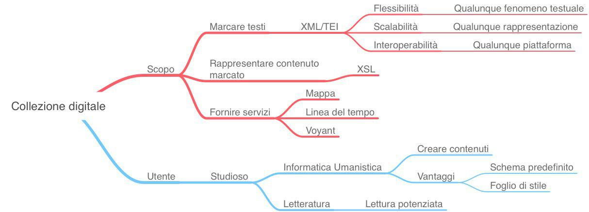
Temi, finalità e destinatari
Il progetto si concentra intorno a tre obiettivi: marcare i testi, rappresentarli e offrire servizi. Marcare i testi significa annotarli attraverso un apposito linguaggio standard, che permetta massima flessibilità descrittiva, scalabilità a qualunque forma di visualizzazione e compatibilità con ogni piattaforma presente e futura. Assolve perfettamente a questo scopo TEI, uno schema di XML di cui si darà ampia trattazione nel capitolo 2.2. Permette infatti di evidenziare qualsivoglia fenomeno testuale ed è non-proprietario, cioè indipendente dal software e dall’hardware.
Con rappresentare i testi ci si riferisce invece a darne una visualizzazione chiara e funzionale, vale a dire utilizzare i fenomeni precedentemente marcati per restituirli in un’interfaccia grafica. In questo modo vengono preservate le qualità delle pubblicazioni tradizionali, potenziandole con ulteriori livelli di lettura.
I servizi, infine, riguardano una mappa, una linea del tempo e degli strumenti di analisi testuale. La mappa e la timeline sono realizzate sfruttando il Geobrowser di DARIAH-DE e concepite in modo da interagire fra di loro, data la stretta connessione tra lo spazio e il tempo, nella realtà come nella letteratura. I dati inseriti riguardano infatti entrambi i domini, sia quello della realtà compositiva dei testi, sia quello della finzione poetica.
L’analisi testuale viene poi implementata grazie a Voyant Tools, con particolare attenzione agli aspetti lessicali.
La risorsa si rivolge a due tipologie di utenza. Da un lato agli studiosi di Informatica Umanistica, che conoscendo XML/TEI possono arricchire il sito di nuovi contenuti. Il loro lavoro sarebbe facilitato dall’avere uno schema predefinito e un foglio di stile che automaticamente visualizza il testo marcato seguendo il detto schema.
Dall’altro lato, ci si rivolge a studiosi di Letteratura in generale, che vogliano potenziare la propria lettura attraverso gli strumenti offerti dalla piattaforma.
Lo stato dell’arte
Per la fase di benchmark si vogliono prendere in esame tutti i progetti di informatica umanistica realizzati con XML/TEI. Il punto di riferimento, quindi, non può che essere il sito ufficiale del Consorzio e in particolare la pagina dedicata ai progetti (https://tei-c.org/activities/projects/). Si segnala che di recente il sito ha subito un massiccio aggiornamento e che molte delle risorse presenti sono state depennate, perché non più aggiornate o per via di domini non rinnovati (ultima visita in data 25/06/2019). Si è quindi preferita la qualità alla quantità.
L’obiettivo di questa esplorazione è scoprire collezioni che, per contenuti e servizi, si avvicinino a quella si intende realizzare. Si valutano poi pregi e difetti delle più interessanti e si prendono spunti da riutilizzare.
Si vuole cominciare dalla Biblioteca italiana (http://www.bibliotecaitaliana.it), un progetto tutto italiano curato dall’Università Sapienza di Roma. Si caratterizza quindi per massima affidabilità delle fonti e dei risultati di digitalizzazione. Il suo obiettivo originario era quello di salvare librerie distribuite su CD in formato proprietario e quindi soggetto a obsolescenza. Ci si riesce marcando appunto i testi in XML/TEI e distribuendoli liberamente. Fino a poco tempo fa l’unico limite del sito era il suo scarso aggiornamento nel layout e qualche link non funzionante, ma di recente ha beneficiato di un restyling completo ed è ad oggi una risorsa fondamentale per reperire testi della Letteratura italiana online. Tutti gli item della collezione sono perciò stati estratti dalla BiBit. Un altro importante spunto che si è deciso di prendere riguarda la struttura del catalogo, dove ogni elemento ha due link, il primo a una scheda e il secondo al testo. Il progetto va a imitare questo modello, sia nell’organizzazione che nella grafica delle due viste principali.
Proseguendo, i servizi offerti, come si è detto, sono fondamentalmente tre: una mappa, una linea del tempo e un sistema di analisi del testo. Tra i diversi link sulla pagina del TEI-C si riportano perciò solo quelli di risorse che facciano uso dei suddetti strumenti.
In generale, si può dire che il tempo e lo spazio come meccanismi di browsing siano estremamente diffusi. Sono molte le collezioni digitali che, pur senza fare uso di mappe o linee del tempo, inseriscono tra i criteri di navigazione avanzata il periodo storico e l’area geografica. Tra quelle di testi marcati in TEI ci sono la Bibliotheca legum. A Database on Carolingian Secular Law Texts (http://www.leges.uni-koeln.de/en/), la Cambridge Digital Library (https://cudl.lib.cam.ac.uk/), la Capitularia. Edition of the Frankish Capitularies (https://capitularia.uni-koeln.de/en/) e la FIHRIST: Union catalogue for Islamic and other Middle Eastern Manuscripts (https://www.fihrist.org.uk/).
Più interessanti per il presente lavoro sono però quelle risorse che implementino vere e proprie mappe e timelines. Anche in questo caso gli esempi non mancano.
Come il Darwin Correspondence Project (https://www.darwinproject.ac.uk/), che integra entrambi gli strumenti, non senza originalità. La Darwin’s Timeline, ad esempio, rappresenta i momenti-chiave nella vita dello scienziato e della storia britannica a lui contemporanea. Dei pulsanti a forma di busta permettono poi di leggere le lettere scambiate nel periodo corrispondente. Questo come tutti gli altri servizi del sito, non si appoggia ad alcuna API, ma è stato sviluppato nativamente dal gruppo di lavoro universitario. Risulta quindi difficile, anche se non impossibile, esportarlo per il progetto. Sarebbe necessario copiare il codice dal client e riadattarlo alle nostre esigenze.
La soluzione ideale è stata trovata all’interno della Beta maṣāḥǝft: Manuscripts of Ethiopia and Eritrea (https://betamasaheft.eu/), che mira a creare un ambiente di ricerca virtuale sulla tradizione manoscritta cristiana in Etiopia ed Eritrea. Comprende una moltitudine di servizi, tra cui una mappa, nella sezione Maps of manuscript with a given context. Si tratta di un servizio terzo, il Geo-Browser realizzato da DARIAH-DE, facilmente esportabile e completo di entrambi gli strumenti, sia la mappa che la linea del tempo. Interagiscono tra di loro e reagiscono ai reciproci comportamenti, esattamente l’obiettivo che si intendeva raggiungere. È proprio questo l’applicativo che si andrà a implementare, per cui si veda il capitolo 2.4.
Per quanto riguarda l’analisi testuale, è interessante il Théâtre classique (1550-1890), progettato dall’Observatoire de la Vie Littéraire dell’Università della Sorbona. Presenta mille pezzi teatrali del periodo classico francese, utilizzando ad esempio <castItem> per marcare i personaggi o <stage> per la regia. Attinente al nostro scopo è la sezione Statistique, che offre numerose modalità di indagine, divise in quattro gruppi: tabelle, grafici, carte e alberi. Tra le tabelle, il Tableau lexical d’un texte mostra le frequenze di tutte le opere della collezione, esplorabili per autore, titolo, atto o personaggio. Tra i grafici invece, il Nombre de spectacles nouveaux dispone su un diagramma cartesiano il numero di pezzi usciti in ogni anno coperto dalla raccolta. Della mappa si è già parlato, quindi si conclude la ricognizione citando l’albero puor une généalogie des textes de théâtre français, che distribuisce efficacemente le varie opere in base al modello classico di riferimento. Si tratta dunque di una collezione sapientemente realizzata, ma anche questo caso i suoi applicativi di analisi risultano di complessa implementazione.
La soluzione è arrivata esplorando non il sito dei TEI-C, ma la sezione Analyze data su DIRT Directory (https://dirtdirectory.org), un registro di tool digitali per studiosi. Per visitarlo è stato necessario servirsi della Way back machine su Archive.org (https://archive.org), un vero e proprio backup del web, poiché la versione attuale del registro presenta molti link non funzionanti. In questo modo si è scoperto Voyant Tools (https://voyant-tools.org), una raccolta di strumenti di ogni tipo, dalle tendenze, alle concordanze, alle collocazioni, tutti orientati a mostrare con evidenza visiva i fenomeni studiati e, soprattutto, di facile esportazione. Purtroppo, però, nessuna tra le collezioni presenti sul sito del TEI-C ne fa uso, per cui si rimanda direttamente al capitolo della trattazione (cfr. 2.5).
Linguaggi
XML e TEI
Storia e caratteristiche di XML
XML, acronimo di Extensible Markup Language, nasce nel 1996 e diventa uno standard riconosciuto dal W3C nel febbraio del 1998. Il suo scopo originale è superare i limiti di HTML e permettere un’annotazione più flessibile dei documenti digitali. HTML è infatti chiuso, non modificabile: ciò significa che l’utente ha a disposizione solo un numero limitato di marcatori e non può crearne di nuovi per le proprie esigenze; è inoltre poco strutturato, inadatto a descrivere fenomeni testuali complessi; infine, sino alla versione 4.01, HTML è stato un linguaggio di markup orientato più al design che alla struttura, dovendo inizialmente fare fronte alle richieste di web designer e web marketer. Dopo l’avvento di CSS, un linguaggio specificamente orientato alla formattazione, l’ultimo problema è stato risolto; tuttavia, ancora oggi HMTL 5 mantiene i primi due.
La base da cui trae origine XML è SGML (Standard Generalized Markup Language), creato nel 1986 dall’umanista Charles Goldfarb. L’obiettivo era definire uno standard internazionale per la marcatura dei testi, che fosse quindi portabile tra hardware e software differenti. Era perciò leggibile dall’utente con un semplice editor di testo e senza l’utilizzo di software specifici. XML non è altro che una sua versione semplificata e orientata alla diffusione e alla preservazione sul web.
Entrambi sono metalinguaggi: non definiscono cioè un vocabolario di marcatura, ma solo una sintassi per la creazione linguaggi per specifiche classi di documenti. La classe del documento viene specificata attraverso un documento detto DTD (Document Type Definition): ad esempio, HTML è una DTD di SGML per la descrizione di ipertesti, mentre TEI (vd. prossimo capitolo) è una DTD di XML per la descrizione di fonti letterarie.
Si analizza ora la struttura base di un qualunque documento XML. Esso si presenta come un file di testo costituito da due parti: un prologo e un corpo. Nel prologo viene esplicitata la versione del linguaggio e la codifica dei caratteri, in questo modo: <?version = “1.0” encoding = “UTF-8”?>. Il corpo si articola invece in una struttura ad albero gerarchica, composta da un elemento radice obbligatorio che contiene tutti gli altri, dagli elementi stessi, gli attributi, le entità e le porzioni testuali.
Ogni nodo (o elemento) può contenere uno o più nodi, stringhe di caratteri o entrambi.
È obbligatorio che ogni tag aperto venga anche chiuso, secondo la notazione <tag>…</tag>. Tuttavia, esistono anche elementi cosiddetti vuoti, poiché non contengono alcun valore, che vanno rappresentati con la notazione <elementoVuoto/>.
Alcune informazioni possono anche essere espresse come attributi di un elemento, invece che come altri elementi. È una scelta del codificatore. Un attributo è composto dal suo nome, e.g. @when, e dal suo valore, e.g. “2019-04”, collocati nel tag di apertura dell’elemento, in questo modo: <tag nome = “valore”>.
Le entità rappresentano invece caratteri speciali o stringhe predefinite di caratteri. Esistono infatti caratteri riservati, da esprimere necessariamente attraverso entità, ovvero caratteri utilizzati per la sintassi XML, che sono: &, <, >, “ e ”. Per essere usati nel corpo dei documenti devono essere espressi nella forma: "&" + codice identificativo + ";". Il codice identificativo può essere alfanumerico o numerico, basato sul relativo codice nel set di caratteri ASCII, nel qual caso "#" introduce un numero decimale e "#x" un numero esadecimale; per esempio: "&", "&" e "&" sono le tre codifiche del carattere &. Le entità possono essere anche usate come scorciatoie per trascrivere concetti o nomi frequentemente ripetuti. In questo caso, vengono dichiarate nel prologo.
Come si è detto, XML può avere innumerevoli applicazioni. Quando più DTD vengono implementate nello stesso documento, occorre distinguere elementi e attributi appartenenti ai diversi schemi. In caso contrario potrebbe generarsi un conflitto tra elementi identici ma di significato differente. Tutti gli elementi appartenenti a una specifica applicazione di XML vengono
assegnati a un URI, che ne identifica univocamente il namespace. Quest’ultimo viene poi esplicitato nell’elemento radice insieme a un prefisso, che servirà a distinguere i diversi elementi.
La sintassi in questo caso è: <root xmlns:prefix = “http://namespace.com”>.
Tuttavia, XML permette di produrre documenti corretti anche senza riferimenti a uno schema. Si parla in questo caso di documenti “ben formati”, che cioè rispettano la sintassi di XML. Ripetendo, devono quindi avere un unico elemento radice che contiene tutti gli altri, elementi con un tag di apertura e uno di chiusura dai nomi identici (XML è case-sensitive) e correttamente annidati, i valori degli attributi devono essere racchiusi tra virgolette e non è possibile usare nel testo i caratteri &, <, >, “ e ” se non attraverso entità. Se invece il documento, oltre a essere ben formato, presenta il riferimento a una DTD (o a uno XML-Schema) si dice “valido”.
Storia e caratteristiche di TEI
La Text Encoding Initiative nasce nel 1987 con l’obiettivo di creare un linguaggio condiviso per la codifica di testi letterari. Lo standard è quindi il risultato della collaborazione di una comunità di studiosi in ambito umanistico, di scienze sociali e linguistiche organizzati nel TEI Consortium (TEI-C), un’organizzazione non-profit che si occupa di sviluppare, pubblicare e conservare le TEI Guidelines, le linee guida del linguaggio stesso.
Inizialmente basato sulla sintassi di SGML fino alla P3 del 1994 (P sta per Principles, corrisponde alla versione), venne poi allineato a XML con la P4 (2002), ancora retrocompatibile con SGML, e la P5 (2007), la versione più recente, completamente revisionata per adattarsi solo a XML.
Come dice il nome stesso, il TEI-C pubblica delle guidelines, non delle direttive. Ogni studioso ha quindi estrema libertà nell’interpretazione di un testo e nell’espressione delle proprie teorie. Per essere ancora più flessibile e adattarsi alle esigenze di ciascuno, nel 1995 è stata pubblicata TEI Lite, un’edizione semplificata e acquisibile in tempi relativamente brevi. Essa contiene 145 elementi, più che sufficienti nel 90% dei casi. In sua assenza la curva di apprendimento risulterebbe logaritmica, presentando TEI 503 elementi e 210 attributi, molti dei quali utili solo in casi estremamente settoriali. L’insieme di questi elementi e attributi è suddiviso in 21 moduli estendibili, ciascuno dei quali approfondisce un determinato aspetto del testo che si vuole rappresentare.
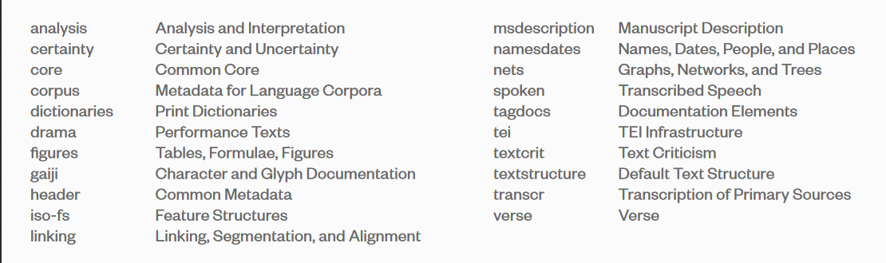
Come si vede, attraverso TEI è possibile rappresentare una moltitudine di fenomeni, tra cui la struttura astratta di varie tipologie testuali (testo in prosa, testo poetico, testo teatrale, fonte
manoscritta, etc.), le caratteristiche rilevanti per diverse aree di ricerca (filologia, analisi linguistica, tematica, narratologica, etc.) e altre tipologie di informazioni (quali immagini e suoni).
Infine, a partire dallo schema minimo raccomandato o dal più ampio possibile, attraverso il software online Roma <https://roma2.tei-c.org/> è possibile generare il proprio TEI personalizzato, rimuovendo elementi o attributi superflui e creandone ex novo.
Si procede adesso, specularmente a quanto fatto per XML, con il descrivere la struttura di un documento TEI. Anziché affrontare l’argomento in astratto, però, quest’ultimo verrà inglobato nella trattazione del documento creato specificamente per rappresentare i testi della collezione.
metodi editoriali adottati
Struttura generale e intestazione
Un testo TEI si riconosce dall’elemento radice <TEI>, che è dichiarato nel namespace <http://www.tei-c.org/ns/1.0>. La prima linea appare quindi come:
<TEI xmlns="http://www.tei-c.org/ns/1.0">
Subito dopo la radice, l’intestazione racchiude meta-informazioni sull’intera raccolta ed è segnalata dal tag <teiHeader>, obbligatorio insieme al <text> che racchiude il testo vero e proprio. Al suo interno, le possibilità di descrizioni sono estremamente ampie ed è necessario un lavoro preliminare di interpretazione per selezionare le più rilevanti. I metadati minimi da riportare sono contenuti nell’elemento <fileDesc>, che presenta una descrizione bibliografica. Al suo interno, sono obbligatori <titleStmt> per il titolo e l’autore della raccolta, <publicationStmt> per l’editore e <sourceDesc> per la descrizione della fonte primaria. Anche l’ordine degli elementi è prescritto dallo schema. Oltre a questi, si è scelto di riportare l’estensione del file, espressa in bytes (<extent>).
Entrando più nello specifico, <titleStmt> contiene un elemento <title> e un elemento <author>, che segnalano rispettivamente il titolo e l’autore non della codifica, ma della fonte originale. A proposito del titolo, è buona norma apporre a quello vero e proprio la dicitura “un’edizione digitale”. Per fare un esempio con un testo della collezione, si può trovare:
<teiHeader>
<fileDesc>
<titleStmt>
<title>Commedia, Inferno, XXI, vv. 64-114: un'edizione digitale</title>
<author>Dante Alighieri</author>
</titleStmt>
<extent>10 KB</extent>
<!-- -->
</fileDesc>
</teiHeader>
Per quanto riguarda lo stato di pubblicazione, si è scelto di citare il <distributor>, cioè l’Alma Mater Studiorum, e di riportarne i dati sul luogo di pubblicazione e l’indirizzo, sciolto a sua volta nella via e nel codice postale della sede centrale. Inoltre, in questa sezione si è trascritta la data del giorno in cui la codifica è stata ultimata (escluse revisioni successive che vengono trattate in un luogo a parte). Si è riportata infine un’indicazione sulla disponibilità, che nel nostro caso è di libero accesso per ogni finalità scientifica e di divieto per quanto riguarda l’uso commerciale.
<publicationStmt>
<distributor>Alma Mater Studiorum</distributor>
<pubPlace>Bologna</pubPlace>
<address>
<street>Via Zamboni 33</street>
<postCode>40126</postCode>
</address>
<date>2019-06-27</date>
<availability>
<p>Questa risorsa digitale è liberamente accessibile per uso personale o scientifico. Ogni uso commerciale è vietato</p>
</availability>
</publicationStmt>
Si passa poi alla descrizione della fonte, cioè del testo cartaceo che si vuole rappresentare in digitale, cosa che avviene nella <sourceDesc>, obbligatoria. In questo caso si aprono molteplici possibilità di articolazione, più o meno strutturate a seconda delle esigenze. Si è adottata una soluzione intermedia tra la prosa libera di <p> e l’esaustività di <biblFull>, ovvero <biblStruct>. Vi si riportano il titolo e l’autore della monografia, il curatore dell’edizione critica e le informazioni sull’editore, con luogo e data di pubblicazione. Si conclude così la prima sezione, dedicata alla descrizione bibliografica.
<fileDesc>
<!-- -->
<sourceDesc>
<biblStruct>
<monogr>
<title>La Commedia secondo l'antica vulgata</title>
<author>Dante Alighieri</author>
<editor role="curatore">Petrocchi, Giorgio</editor>
<imprint>
<pubPlace>Firenze</pubPlace>
<publisher>Le Lettere</publisher>
<date when="1994">1994</date>
</imprint>
</monogr>
</biblStruct>
</sourceDesc>
</fileDesc>
La descrizione della codifica, nell’elemento <encodingDesc>, è il secondo grande capitolo dell’intestazione. Come dice il nome stesso, vi si espongono le strategie di codifica adottate e i meccanismi interpretativi prescelti. Per la nostra collezione si è deciso di documentarne gli aspetti presi in esame nell’elemento <interpretation> all’interno dell’<editorialDecl>, che contiene tanti paragrafi sciolti quanti sono gli argomenti affrontati: ad esempio uno studio sul lessico, che verrà appositamente evidenziato sul testo, e certamente i riferimenti spaziali e temporali, da rappresentare poi sulla mappa e sulla linea del tempo. Altre possibilità descrittive come le correzioni, normalizzazioni, trattamento delle virgolette e dei trattini non sono evidentemente pertinenti ai fini di questo lavoro.
<encodingDesc>
<editorialDecl>
<interpretation>
<p>Studio del lessico attinente alla natura</p>
<p>Studio dei riferimenti spaziali e temporali</p>
<p>Studio dei personaggi</p>
</interpretation>
<!-- -->
</encodingDesc>
È interessante notare come l’intera documentazione fin qui prodotta inerente al progetto sia completamente trascrivibile all’interno della testata TEI. L’elemento successivo è infatti <projectDesc>, la descrizione del progetto, nel quale in semplici paragrafi è possibile riferire gli obiettivi per i quali il testo elettronico è stato creato: in una parola, il brief. Vi si sono appunto sintetizzati i punti chiave sulle finalità già esposti nel capitolo 1.2.
<projectDesc>
<p>Arricchire il testo di metainformazioni e visualizzarle, in particolare per quanto riguarda il lessico, i personaggi, il tempo e lo spazio.</p>
</projectDesc>
Gli elementi XML utilizzati per marcare il testo vengono poi formalmente documentati nella sottosezione <tagsDecl>. Al suo interno è indicato il namespace al quale gli elementi appartengono e, subordinati a esso, i singoli tag, ciascuno in un elemento <tagUsage>. Il nome dei tag è presente come valore di un attributo @gi (general identifier), mentre il numero di occorrenze come valore di un attributo @occurs. Il valore di ogni elemento <tagUsage> documenta infine l’uso interpretativo che dei marcatori si è fatto. Ecco allora <lg>, usato per marcare un gruppo di versi, inteso sia come intera poesia che come singola strofa; <head>, utilizzato per segnalare il titolo della singola poesia; oppure <l>, che invece evidenzia il singolo verso.
Successivamente, <refsDecl> esplicita ogni sistema di riferimento adottato. Nel nostro caso, l’attributo @n per numerare le strofe e i versi.
<encodingDesc>
<!-- -->
<tagsDecl>
<namespace name="http://www.tei-c.org/ns/1.0">
<tagUsage gi="lg">Marca un gruppo di versi, inteso sia come intera poesia che come singola strofa</tagUsage>
<tagUsage gi="head">Marca il titolo della singola poesia</tagUsage>
<tagUsage gi="l">Marca il singolo verso</tagUsage>
<tagUsage gi="name">Marca il campo lessicale prescelto. Per ulteriori specificazioni vedi la Reference System Declaration</tagUsage>
<tagUsage gi="placeName">Marca il nome di un luogo e contiene il tag settlement</tagUsage>
<tagUsage gi="settlement">Marca il tipo di luogo, ad esempio una città, ed è contenuto dal tag placeName</tagUsage>
<tagUsage gi="date">Marca una data</tagUsage>
</namespace>
</tagsDecl>
<refsDecl>
<p>I versi delle terzine sono numerati con l'attributo <att>n</att>, che ricorre ogni tre versi</p>
<p>Il lessico del mondo naturale animale è indicato dal valore <val>animalNature</val> dell'attributo <att>type</att></p>
<p>Il lessico del mondo naturale vegetale è indicato dal valore <val>vegetalNature</val> dell'attributo <att>type</att></p>
<p>Il lessico del mondo naturale minerale è indicato dal valore <val>mineralNature</val> dell'attributo <att>type</att></p>
<p>Il lessico del mondo naturale mitologico è indicato dal valore <val>mythNature</val> dell'attributo <att>type</att></p>
<p>Il nome di una città è segnalato dal valore <val>città</val> dell'attributo <att>type</att></p>
<p>Ulteriori specificazioni sul tempo e sulle date è fornito dall'attributo <att>when</att></p>
</refsDecl>
</encodingDesc>
A seguire, una delle sezioni più importanti per la buona riuscita del progetto: la <profileDesc>, la descrizione del contesto nel quale il testo è stato creato. Al suo interno è infatti presente l’elemento <creation>, che documenta appunto l’anno e il luogo di creazione dell’opera, se conosciuti. Nel caso dell’Inferno di Dante, si può parlare di un arco temporale più o meno certo, mentre non c’è un luogo preciso, dato che durante l’esilio il Poeta fu itinerante.
<profileDesc>
<creation>La data di composizione dell'<title>Inferno</title> è incerta. Si suppone tra il <date from="1306" to="1309">1306 e il 1309</date>.
</creation>
<!-- -->
</profileDesc>
Sempre all’interno della descrizione del profilo, si può specificare la lingua usata dall’autore, in questo caso l’italiano. Volendo essere pignoli, sarebbe più preciso parlare di fiorentino del Trecento, ma lo schema accetta solo tag registrati presso IANA (http://www.iana.org/assignments/language-subtag-registry/language-subtag-registry) e questa specificazione non è presente. Si lascia quindi il classico “it”.
<langUsage>
<language ident="it">Italiano</language>
</langUsage>
La sezione si conclude con un elenco dei personaggi apparsi nell’estratto. Quelli esplicitamente citati vengono inoltre associati a un @xml:id, che viene ripreso all’interno del testo dall’attributo @ref, appunto un riferimento. Questo elenco avviene all’interno di <particDesc>, la descrizione dei partecipanti, che contiene a sua volta una <listPerson>. Ogni persona, all’interno di un proprio tag <person>, presenta indicazioni sul proprio nome attraverso l’elemento <persName>. Nel caso di Dante, ad esempio, si fornisce il <forename>, il nome, e il <surname>, il cognome. Sono possibili anche onomastiche più complesse, come quella romana antica, che consta di un praenomen, un nomen e un cognomen: ciascuno è specificabile all’interno di un attributo @type, come si vede di seguito.
<profileDesc>
<particDesc>
<listPerson>
<person>
<persName>
<forename type="praenomen">Publius</forename>
<forename type="nomen">Vergilius</forename>
<surname type="cognomen">Maro</surname>
</persName>
</person>
<person>
<persName>
<forename>Dante</forename>
<surname>Alighieri</surname>
</persName>
</person>
<person>
<persName xml:id="MALA">
<forename>Malacoda</forename>
</persName>
</person>
<person>
<persName xml:id="SCAR">
<forename>Scarmiglione</forename>
</persName>
</person>
</listPerson>
</particDesc>
</profileDesc>
L’intestazione generale si conclude con una sezione dedicata alle fasi di revisione, contenute nell’elemento <revisionDesc> ed elencate ciascuna in un elemento <change>.
<teiHeader>
<revisionDesc>
<change when="2019-07-02">Aggiunta di informazioni sulle finalità del progetto</change>
</revisionDesc>
</teiHeader>
Il testo
Conclusa l’intestazione, il contenuto del testo vero e proprio viene racchiuso in un elemento <text> obbligatorio, contenente a sua volta un <body>, anch’esso obbligatorio.
Coerentemente a quanto già espresso nella <tagDecl>, i vari testi poetici sono preceduti da un <head>, riportante il titolo. Ogni strofa si trova poi all’interno di un elemento <lg>, che sta per lines group:, mentre il tipo di strofa è indicato dall’attributo @type: nel caso di Dante, ad esempio, una terzina. Ogni verso, infine, fa capo a un proprio tag <l> - ovvero line – e come nella migliore tradizione dantesca, i versi sono numerati ogni tre, attraverso l’attributo @n.
<text xml:lang="it">
<body>
<head>Commedia, Inferno, XXI, vv. 64-114</head>
<!-- -->
<lg type="terzina">
<l>Innanzi che l'uncin vostro mi pigli, </l>
<l>traggasi avante l'un di voi che m'oda, </l>
<l n="75">e poi d'arruncigliarmi si consigli". </l>
</lg>
<!-- -->
</body>
</text>
Si procede adesso con qualche esempio di marcatura. Se il lessico che si è deciso di evidenziare è quello riguardante la natura, come nel nostro esempio, è possibile utilizzare il tag <name>, sufficientemente generico, e specificare il campo semantico preso in esame attraverso l’attributo @type. Nel nostro caso si sono individuati quattro tipi di natura: una minerale, una vegetale, una animale e una mitologica, segnalati rispettivamente dagli attributi mineralNature, vegetalNature, animalNature e mythNature.
<l>e com'el giunse in su la <name type="mineralNature">ripa</name> sesta, </l>
<l n="84">[…]cammin <name type="vegetalNature">silvestro</name>". </l>
<l>ch'escono i <name type="animalNature">cani</name> a dosso al poverello </l>
<l>Tutti gridaron: "Vada <name ref="#MALA" type="mythNature">Malacoda</name>!"; </l>
Come si vede dall’ultimo esempio, Malacoda è contemporaneamente un esempio di natura mitologica e un personaggio, quindi è presente il riferimento all’@xml:id usato in <particDesc>.
Restano da individuare gli altri due oggetti di interesse per questa collezione: lo spazio e il tempo, da riportare rispettivamente sulla mappa e sulla timeline.
Per i luoghi si è prescelto l’elemento <placeName>, per la sua flessibilità. Può infatti contenere sia un nome di luogo assoluto che relativo, sia urbano che non. Nel caso di una città si usa l’elemento <settlement>, mentre nel caso di un luogo montano o rurale l’elemento <geogName>. Se l’indicazione geografica è relativa a un altro luogo si usano gli elementi <measure> e <offset>, per indicare la distanza dal <settlement> o dal <geogName>. Per fare un esempio sempre dal testo dantesco:
<l>così vid'io già temer li fanti </l>
<l>ch'uscivan patteggiati di
<placeName>
<settlement type="city">Caprona</settlement>
</placeName>,
</l>
<l n="96">veggendo sì tra nemici cotanti. </l>
Infine, per ciò che riguarda il tempo, si utilizza l’elemento <date>. Al suo interno, l’attributo @when ripete l’indicazione temporale, secondo uno dei seguenti formati: xsd:gYear, xsd:gYearMonth, xsd:date o xsd:dateTime. Per maggiori dettagli vedere il capitolo sulla linea del tempo.
<lg type="terzina">
<l>Ier, <date when="0034-03-25T12:00:00">più oltre cinqu'ore</date> che
<date when="1300-03-26T07:00:00">quest'otta</date>, </l>
<l><date when="1300">mille dugento con sessanta sei</date></l>
<l n="114">anni compié che <date when="0034">qui la via fu rotta</date>.</l>
</lg>
Come si vede, attraverso questa notazione è possibile marcare anche un passo estremamente complesso come quello riportato, dove una data si riferisce a un'altra e mancano indicazioni esplicite sia sull’una che sull’altra. Anzi, in questo caso la marcatura è già un’interpretazione, perché aggiunge informazioni su quella che Dante riteneva essere la data della morte di Cristo, cioè il 25 Marzo del 34 alle ore 12, e quindi la data del viaggio dantesco, che in quel momento si svolge il 26 Marzo del 1300 alle ore 7. È proprio a partire da questa informazione che i critici hanno datato tutto il resto del Poema.
Struttura e layout
La struttura generale della risorsa, a partire dalla home, si compone di quattro sezioni: gli autori, la mappa e la timeline, Voyant e la documentazione. La sezione Autori è a sua volta formata da tante sottosezioni quanti sono gli autori della collezione.
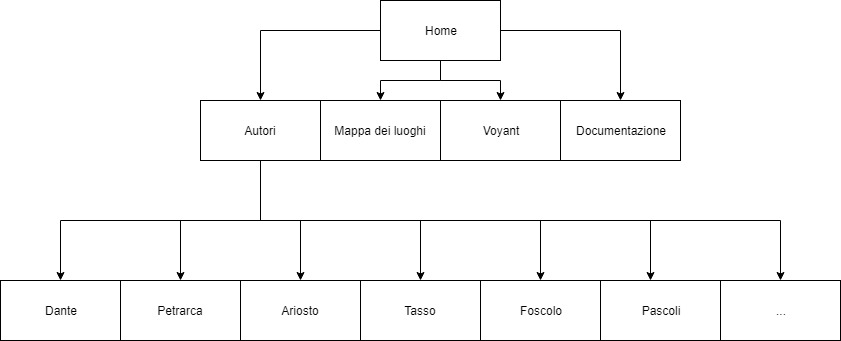
Figura 1: Struttura del sito.
Accedendo a un autore, si visualizza una lista delle opere o degli estratti a lui associati. Ciascun elemento riporta due link: uno alla scheda e uno al testo, su modello della Biblioteca Italiana (cfr. 2.1.2).
Le schede riportano i dati bibliografici, la descrizione della fonte cartacea, della versione digitale e i link al file XML e al testo. In pratica restituiscono in un’interfaccia il contenuto del <teiHeader>. Il testo invece permette di leggere il contenuto del <text>, con in aggiunta uno strumento di ricerca. Questo consiste in tanti menu a tendina quante sono le categorie analizzate: nel nostro caso, il lessico e i personaggi.
Sia la scheda che il testo vengono generati a partire dal file XML grazie a un processore XSLT, di cui si darà ampia descrizione in questo capitolo. XSLT è un acronimo per eXtensible Stylesheet Language Transformations ed è un linguaggio per trasformare documenti XML in altri documenti di qualsivoglia formato, dall’XML stesso all’HTML, ma le possibilità sono davvero illimitate.
È in realtà un sotto-linguaggio di XSL, una specifica per i fogli di stile pensata appositamente per l’XML. A differenza del CSS, infatti, fa uso della stessa sintassi XML, evitando problemi di incompatibilità tra software. Oltre a XSLT, XSL comprende anche XPath, utile per specificare a quale parte del documento ci si sta riferendo nel generare una certa trasformazione o un certo stile, e XSL-FO, il vocabolario per la formattazione del documento, che però è deprecato dal 2013, causa l’avvento di CSS3.
A titolo di esempio sono state create due pagine del sito: la scheda e il testo. I successivi due capitoli le prendono in esame separatamente. È interessante notare fin da subito che entrambe le viste hanno come base lo stesso file XML, anche se i risultati – sia per stile che per contenuto – sono completamente diversi. Attraverso XPath vengono infatti selezionati per la scheda gli elementi del <teiHeader> e per il testo quelli del <text>. Inoltre, dato che ogni testo viene marcato con lo stesso schema progettuale, lo stesso foglio di stile è scalabile a tutti gli item della collezione.
Si espone adesso la struttura generale di un foglio di stile XSL. L’elemento radice appare obbligatoriamente nella forma:
<xsl:stylesheet version="2.0" xmlns:xsl="http://www.w3.org/1999/XSL/Transform">
Viene specificata la versione di XSL utilizzata, in questo caso a 2.0, e il namespace con il riferimento a un URI, analogamente a quanto visto per XML.
Successivamente, l’elemento <xsl:template> definisce delle regole da applicare al nodo specificato nell’attributo @match.
<xsl:template match="/">
L’utilizzo del carattere / indica al processore di applicare queste regole all’elemento radice dell’XML, nel nostro caso <TEI>.
All’interno del template viene replicata la struttura di un documento HTML, con un <head> e un <body>. Nell’<head> sono state incluse le librerie di jQuery e Bootstrap, di cui si farà ampio uso, mentre nel <body> è comune a tutte le pagine una barra di navigazione.
La navbar è stata realizzata con Bootstrap. Si è scelta la versione light, color grigio chiaro, e si sono inseriti i link alle macro-sezioni di cui si è detto all’inizio del capitolo.
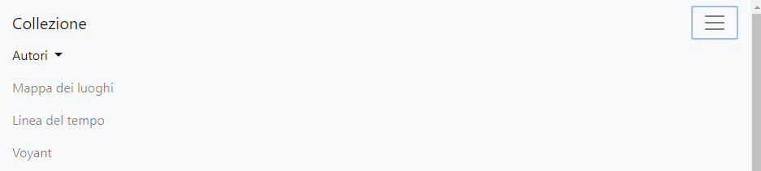
Figura 2: barra di navigazione.
La scheda
Sempre all’interno dell’elemento <xsl:template>, sotto la barra di navigazione, <xsl:apply‑templates> indica di applicare in quel punto il template, definito successivamente, che faccia riferimento al nodo XML specificato dall’attributo @select. Il percorso viene dichiarato utilizzando xPath, con una sintassi simile a quella delle directory.
<main class="container">
<section class="my-5">
<xsl:apply-templates select="/TEI/teiHeader" />
</section>
</main>
Main e section sono due elementi di HTML5, indicanti rispettivamente la parte principale della pagina e una generica sezione. Uno screen reader che incontri il primo tag pronuncerà, nel caso di VoiceOver ad esempio, “principale”, lasciando intendere alla persona con disabilità visiva dove si trova all’interno della pagina. I tag di HTML5 non sono sufficienti per rendere una pagina usabile, ma è sempre meglio preferirli, quando possibile, alla generica <div>. All’interno della <section> sono quindi presenti tanti <article> quante sono le sezioni autonome. Queste vengono formattate in un elemento <xsl:template>, con attributo @match="teiHeader".
Per la scheda ci sono quattro articoli.
Nel primo è presente il titolo dell’estratto, l’autore, il luogo di pubblicazione e informazioni sulla creazione del testo originale.
<xsl:template match="teiHeader">
<p class="lead">Titolo</p>
<h4 class="mb-4"><xsl:value-of select="fileDesc/titleStmt/title"/></h4>
<article class="row">
<div class="col-sm-12 col-md-6">
<p><strong>Autore: </strong><xsl:value-of select="fileDesc/titleStmt/author"/></p>
<p><strong>Pubblicazione: </strong><xsl:value-of select="fileDesc/publicationStmt/pubPlace"/>: <xsl:value-of select="fileDesc/publicationStmt/distributor"/>, <xsl:value-of select="fileDesc/publicationStmt/date"/></p>
</div>
<div class="col-sm-12 col-md-6">
<p><strong>Creazione: </strong><xsl:value-of select="profileDesc/creation"/> </p>
</div>
</article>
<!---->
</xsl:template>
Come si vede, il titolo viene preso dal <title> all’interno del <titleStmt>, così come l’autore dall’elemento <author>; il luogo di pubblicazione è il <pubPlace> descritto nel <publicationStmt> e infine le informazioni sulla composizione dell’opera vengono dal tag <creation> presente nella <profileDesc>. Questi percorsi si trovano in un attributo @select all’interno di un elemento <xsl:value-of>, che serve appunto a inserire il valore di quello specifico path nel punto stabilito.
Per quanto riguarda lo stile, è stato realizzato attraverso le classi di Bootstrap. I titoli degli articoli sono messi in risalto tramite la classe lead, mentre i paragrafi sono stati disposti su due colonne nel caso vengano visualizzati su dispositivi medi o grandi (≥768px), su una colonna sola per dispositivi piccoli (≥576px).
<div class="col-sm-12 col-md-6">
Nel secondo articolo viene descritta la fonte cartacea, con riferimento all’autore, alla pubblicazione, al titolo e alle responsabilità dell’edizione.
Nel terzo si trova invece la descrizione della versione digitale, con la sua dimensione in KB, la descrizione del progetto, le interpretazioni e la disponibilità. Diversamente al criterio organizzativo fin qui incontrato, la descrizione del progetto e le interpretazioni sono state visualizzate in un list group di Bootstrap: questo per via della loro stretta correlazione e per rendere il testo più leggibile senza appesantire la vista.
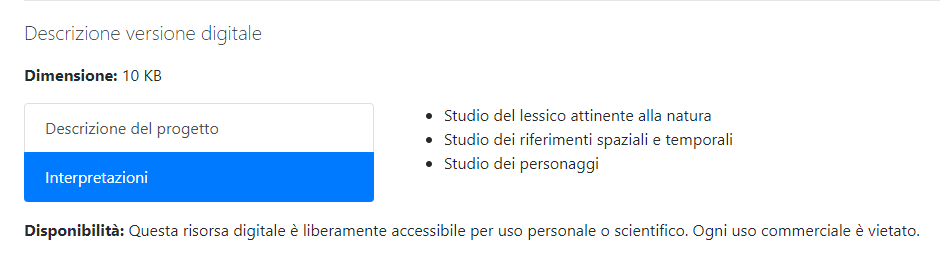
Figura 3: List group di Bootstrap per la descrizione del progetto e le interpretazioni.
Per includere tutte le interpretazioni indipendentemente dal loro numero, viene in aiuto l’elemento <xsl:for-each> di XSLT, un vero e proprio ciclo che passa in rassegna tutto il contenuto del percorso specificato.
<ul>
<xsl:for-each select="encodingDesc/editorialDecl/interpretation/p">
<li><xsl:value-of select="."/></li>
</xsl:for-each>
</ul>
Nel quarto e ultimo articolo, per concludere, si trovano i link al file XML e il rimando al testo vero e proprio.
Ecco come appare una scheda tipo nella sua interezza.
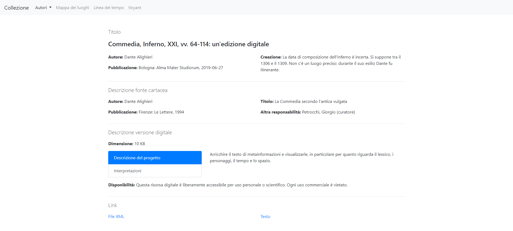
Figura 4: La scheda.
il testo
Come si è detto, la pagina del testo è articolata in due elementi: lo strumento di ricerca e i versi.
Il primo si trova in una <nav>, il secondo in una <section>. Sono disposti in modo da trovarsi affiancati su schermi medi e grandi (≥768px), uno sotto l’altro su schermi piccoli (≥576px).
<main class="container-fluid">
<div class="row">
<nav class="col-md-12 col-lg-3 m-5">
<xsl:apply-templates select="/TEI/teiHeader"/>
</nav>
<section class="col-md-12 col-lg-6 m-5">
<xsl:apply-templates select="/TEI/text"/>
</section>
</div>
</main>
Lo strumento di navigazione si compone di due menu di opzioni, ovvero due <select>, uno per il lessico e l’altro per i personaggi. Vengono entrambi popolati in automatico del corretto numero di <option>. Questo avviene grazie a elemento <xsl:for-each> che cicla, per il lessico, sui <val> contenuti nei paragrafi della <refsDecl>, per i personaggi sui <person> in <listPerson>. Se prendiamo ad esempio l’estratto dantesco, le opzioni per il lessico saranno quindi animalNature, vegetalNature, mineralNature, mythNature, città e tempo, mentre quelle per i personaggi Publius Vergilius Maro, Dante Alighieri, Malacoda e Scarmiglione.
Il meccanismo di questo strumento è molto semplice: permette di evidenziare nel testo il verso o i versi relativi al campo selezionato. Se ci si posiziona su mineralNature nel menu sul lessico, tenendo sempre presente il canto XXI dell’Inferno, vengono allora colorati di giallo i versi “e com’el giunse in su la ripa sesta”, “tra li scheggion del ponte quatto quatto”, “iscoglio non si può, però che giace”, “andatevene su per questa grotta;” e “presso è un altro scoglio che via face”. Questo perché in tutti è presente almeno un vocabolo che nel documento XML si trova entro un tag <name> con attributo @type = “mineralNature”.
L’utilità sta nel vedere a colpo d’occhio, direttamente sul testo, qual è il campo semantico preponderante tra quelli cercati, per poi trarne considerazioni. Nel nostro caso è appunto quello sul lessico minerale, che vanta 5 occorrenze contro 2 del lessico mitico e 1 per quelli animale e vegetale. È un risultato abbastanza atteso all’interno dell’VIII Cerchio in generale, quello di Malebolge. Dante vi entra con il canto XVIII, che si apre con i seguenti versi:
“Luogo è in inferno detto Malebolge,
tutto di pietra di color ferrigno,
come la cerchia che dintorno il volge.”
(Dante Alighieri, Inferno, XVIII, vv. 1-3)
La penultima zona dell’Inferno si apre dunque non nel segno del fuoco, ma della pietra, perché via via che si scende verso Lucifero Dante ha immaginato una pietrificazione delle coscienze, fino a Cocito dove si è immersi nel ghiaccio. Parallelamente si assiste anche a una pietrificazione di Dante stesso, che è sempre meno compassionevole nei confronti dei dannati, a cominciare proprio dai fraudolenti dell’VIII Cerchio di Malebolge.
Ecco spiegato come mai prevale il lessico minerale: a livello letterale per il fatto che la struttura del luogo è di pietra, a livello allegorico perché disumano è usare la facoltà principe donata da Dio, l’intelligenza, a scopo malvagio.
Per realizzare il detto strumento di esplorazione del testo si è fatto uso di uno script molto semplice. La funzione evidenzia() viene lanciata quando l’opzione selezionata cambia, attraverso l’event listener “onchange”.
Questa funzione inserisce in una variabile il valore selezionato, rende trasparente lo sfondo di tutti i versi e infine giallo quello dei versi le cui classi corrispondono alla variabile.
Per inserire uno script all’interno di un documento XSL è necessario racchiuderlo entro una sezione CDATA, ovvero character data, in modo tale che il processore XSLT non lo interpreti come codice XML ma come semplice testo, mentre il parser del browser capirà perfettamente trattarsi di Javascript e lo leggerà come tale.
Di seguito si riporta il codice relativo al primo menu.
<![CDATA[
function evidenzia() {
var lessicoSelezionato = $("#lessico").val();
$("p").css("background-color", "transparent");
$("." + lessicoSelezionato).css("background-color", "yellow");
}
]]>
La presenza di un attributo @value per ogni <option> e di una classe per ogni verso non è automatica. Va infatti specificata con l’elemento <xsl:attribute name=“value”> nel primo caso, <xsl:attribute name=“class”> nel secondo, inserendoli all’interno rispettivamente degli elementi <option> e <p>.
A seguire un esempio completo di input per il lessico.
<div class="input-group mb-3">
<div class="input-group-prepend">
<label class="input-group-text" for="lessico">Lessico</label>
</div>
<select class="custom-select" id="lessico" onchange="evidenzia()">
<option selected="selected">Scegli...</option>
<xsl:for-each select="encodingDesc/refsDecl/p/val">
<option>
<xsl:attribute name="value">
<xsl:value-of select="."/>
</xsl:attribute>
<xsl:value-of select="." />
</option>
</xsl:for-each>
</select>
</div>
Per quanto riguarda lo stile, è realizzato con Bootstrap, grazie alle classi input-group per il contenitore e custom-select per il menu vero e proprio. Le due etichette, “Lessico” e “Personaggi”, sono contigue alla tendina grazie rispettivamente alle classi input‑group‑prepend e input‑group‑append, che creano un piacevole bilanciamento disponendo la prima a sinistra e la seconda a destra.
Si passa ora a descrivere il secondo modulo della vista testo, cioè il testo vero e proprio. Questo viene marcato nel documento XML attraverso gli elementi <head> per il titolo, <lg> per la strofa ed <l> per il verso. È un sistema valido per qualunque componimento e dunque scalabile a tutti gli item della collezione. Di conseguenza anche il foglio di stile può essere applicato a ciascuno senza modifiche particolari.
All’interno del documento XSL, l’elemento <xsl:template> si riferisce questa volta al <body> attraverso l’attributo @match. Il titolo viene catturato grazie a <xsl:value-of select=“head” />, inserito in un header di primo livello. Successivamente, <xsl:for-each> cicla attraverso le strofe e poi di nuovo attraverso i versi, rappresentando ciascuno in un paragrafo. Dove presente, viene riportato il numero di verso, contenuto nell’attributo @n del verso stesso.
Infine, grazie alle classi di Bootstrap, viene posto un margine verticale tra le strofe e orizzontale tra i versi e i numeri di verso.
<xsl:template match="body">
<h1>
<xsl:value-of select="head" />
</h1>
<xsl:for-each select="lg">
<div class="my-5">
<xsl:for-each select="l">
<p>
<xsl:attribute name="class">
<xsl:value-of select="name/@type"/>
</xsl:attribute>
<xsl:value-of select="." />
<span class="m-5">
<xsl:value-of select="@n" />
</span>
</p>
</xsl:for-each>
</div>
</xsl:for-each>
</xsl:template>
L’immagine sottostante mostra come appare la vista finale.
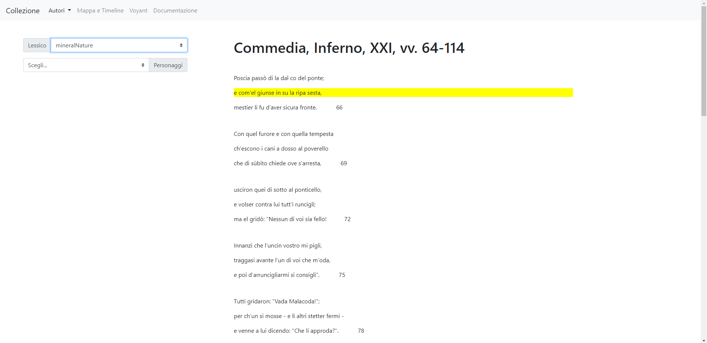
Figura 5: Il testo.
Strumenti
La mappa e la linea del tempo
DARIAH-DE Geo-Browser: la mappa
Per realizzare la mappa esistono varie possibilità. Una di queste è sfruttare il DARIAH‑DE Geo‑Browser. È curato appunto dalla Digital Research Infrastructure for the Arts and Humanities, un ecosistema di ricerca con l’obiettivo di coniugare le discipline umanistiche con quelle informatiche. Si tratta di uno strumento decisamente ricco, che consente l’elaborazione di più richieste e facilita la visualizzazione dei dati in una correlazione di elementi spaziali, temporali e le rispettive sequenze nei testi. Coniuga insomma in un’unica interfaccia la mappa, la linea del tempo e la ricerca testuale. In questo modo, i ricercatori possono analizzare le relazioni spazio‑temporali di dati e materiale sorgente e stabilire simultaneamente i rapporti tra di essi.
Un altro considerevole vantaggio è che questo, come molti altri servizi messi a disposizione da DARIAH, è liberamente accessibile online e non richiede alcuna registrazione.
Infine, si segnala che l’ultimo aggiornamento, la versione 2.7.0, è avvenuto ad Aprile 2019, due mesi prima della stesura di questo testo: un ottimo indizio della sua qualità e longevità.
La vista principale è costituita da una mappa del mondo. Scrollando con il mouse o con il pinch delle due dita su smartphone si zooma. Sul lato sinistro è inoltre presente una zoom-bar.
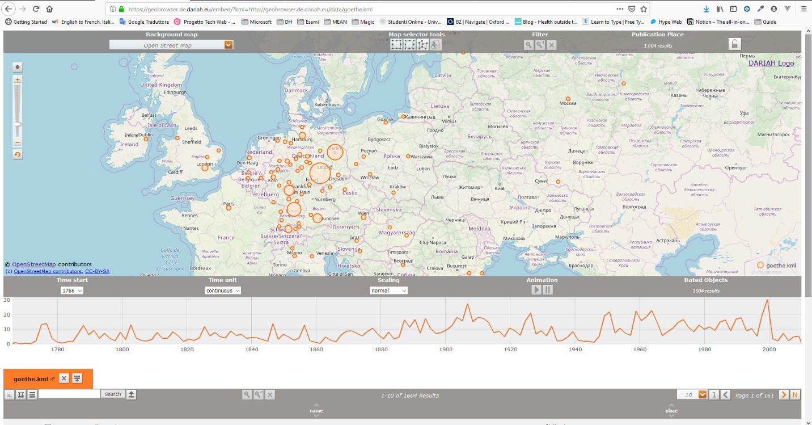
Figura 6: Overview sul Geo-Browser.
Nella parte superiore si trova un menu a tendina con varie opzioni per la mappa di sfondo. Quella di default è OpenStreetMap, ma ci sono anche diverse mappe storiche, la più antica delle quali del 2000 a.C. Purtroppo, però, tutte le mappe a parte quella predefinita sono estremamente spoglie e povere di informazioni. Alcune, come la Barrington Roman Empire, non sono nemmeno visualizzate correttamente, lasciando immaginare la presenza di un bug temporaneo. Si spera vivamente che venga risolto al più presto, essendo questa una caratteristica molto interessante per la collezione che si va a realizzare: permetterebbe infatti di visualizzare, ad esempio, i luoghi dei testi danteschi in una mappa dell’Italia del Trecento. È questo il vantaggio e lo svantaggio di affidarsi a una risorsa terza: da un lato il fatto che potrebbe evolversi e migliorare nel tempo, dall’altro errori e bug che non si possono risolvere direttamente.
Le possibilità della mappa non finiscono qui: è infatti possibile tracciare forme geometriche per marcare aree geografiche. Si può scegliere tra un rettangolo, un cerchio o una forma flessibile con tanti angoli quanti click si fanno sulla mappa; per completare la forma occorre cliccare due volte sull’ultimo punto. Una volta che l’area è stata scelta, tutti i luoghi vengono marcati anche nella lista dei risultati: nello specifico, vengono evidenziati sulla linea del tempo, mentre gli altri appaiono opachi, e vengono selezionati nella tabella sottostante attraverso una casella di spunta.
Subito a fianco, sempre nella barra di menu in alto, il filtro permette di evidenziare o rimuovere elementi precedentemente evidenziati attraverso le forme geometriche di cui si è detto. La prima lente di ingrandimento isola quei risultati eliminando gli altri sulla mappa, mentre la seconda lente con -1 all’esponente consente di cancellare i punti selezionati. In questo modo è possibile isolare una certa area geografica e visualizzare solo i risultati che interessano.
Per concludere, Publication Place mostra il numero di risultati per una determinata query.
Figura 7: Opzioni della mappa.
Figura 7: Opzioni della mappa.
La linea del tempo
Quando i dati vengono caricati sul Geo-Browser, una linea del tempo appare sotto la mappa. Questa linea del tempo mostra la sequenza cronologica dei dati. L’immagine qui sotto mostra come appare il grafico una volta inseriti i dati della nostra collezione.
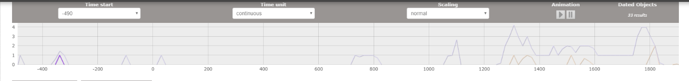
Figura 8: La linea del tempo.
Con Time start si può scegliere l’anno di inizio da cui far cominciare l’asse x del grafico. È anche possibile selezionare la Time unit, cioè l’unità di tempo. L’unità scelta viene mostrata come istogrammi.
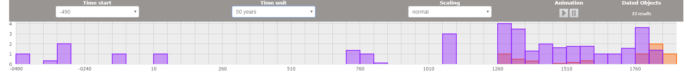
Figura 9: Istogrammi sulla linea del tempo.
Questo offre due vantaggi: da un lato è possibile capire a colpo d’occhio in che periodo si concentrano le risorse della collezione, dall’altro – selezionando un blocco – vengono evidenziati sulla mappa e sulla tabella i riferimenti corrispondenti. Nel nostro caso, la raccolta abbraccia un arco molto lungo, poiché comprende autori italiani di quasi tutti i secoli dal Trecento all’Ottocento, che a loro volta citano nei propri testi eventi dai più remoti ai più contemporanei.
Tramite il menu a tendina Scaling, proseguendo, si può cambiare la scala del grafico da normale a logaritmica e percentuale. Ci si riferisce all’asse y, dove viene riportato il numero delle risorse associate a un certo anno o periodo.
Il servizio di DARIAH offre anche un’animazione, attivabile selezionando un’area sulla linea del tempo. Con i pulsanti play-pausa si fa partire la dimostrazione. L’area marcata passa attraverso la timeline da sinistra a destra, mentre i luoghi che sono collegati a un certo anno lampeggiano sulla mappa.
I dati
Veniamo adesso a come si caricano i dati. Il sistema accetta tre tipi di formato: il KML, il CSV e l’XLS. KML sta per Keyhole Markup Language ed è un linguaggio basato su XML; il suo scopo è gestire dati geospaziali in tre dimensioni: il termine keyhole viene infatti dal software da cui deriva Google Earth. La Keyhole, Inc venne d’altronde acquisita dalla stessa Google nel 2004 e oggi il formato è supportato da Google Maps. Ciononostante, KML è uno standard internazionale mantenuto dall’Open Geospatial Consortium, Inc. (OGC). Il Geo-Browser di DARIAH supportata inoltre la versione compressa di KML, ovvero KMZ.
CSV sta invece per comma-separated values ed è usato per l’importazione e l’esportazione di tabelle di dati. Non esiste al momento uno standard che lo definisca, ma solo una prassi più o meno consolidata. Infine, XLS non è altro che l’estensione di un file di Microsoft Excel, un formato dunque proprietario. Dal 2016 è comunque possibile utilizzare sul Geo-Browser anche XLSX, l’equivalente non proprietario di XLS, poiché basato su XML.
Per le esigenze di questo progetto si è pensato che fra le tre opzioni disponibili CSV sia la più semplice da implementare, essendo l’unica pienamente documentata sul sito del Geo-Browser (https://geobrowser.de.dariah.eu/doc/datasheet.html).
Come si è detto, CSV è la linearificazione di una tabella sotto forma di stringa.
Si basa su poche semplici regole:
Nel dubbio, usare i doppi apici per ogni cella è una pratica comune che evita di dover gestire i singoli casi.
Il Geo-Browser riconosce nove intestazioni di tabella, che sono:
Non è necessario specificare tutti i valori menzionati. Ad esempio, il punto nel tempo e l’arco temporale si escludono a vicenda, a seconda di cosa è più interessante per la risorsa descritta.
L’implementazione
Finora si è parlato del Geo-Browser in astratto, per come appare sul sito di DARIAH-DE. Si vuole ora discutere di come integrarlo all’interno della nostra collezione. A questo proposito, DARIAH mette a disposizione un Embedded-Version che può essere inserita in qualsiasi sito web via HTML, attraverso il tag <iframe>. Per funzionare correttamente, occorre che l’URL espresso dall’attributo scr si riferisca a uno o più file CSV. Per esempio, se l’URL base è <https://geobrowser.de.dariah.eu/embed/>, a questo va aggiunta una parte query con il rimando alla risorsa, come <?csv=collezionedigitale.it/risorse/dante.csv>. Il risultato finale è allora <https://geobrowser.de.dariah.eu/embed/?csv=collezionedigitale.it/risorse/dante.csv>.
Si può sia creare un'unica tabella contenente tutti i dati, sia più tabelle. La seconda opzione presenta un vantaggio: i dati associati a file diversi vengono mostrati con colori diversi. Si vuole sfruttare questa funzionalità inserendo in una tabella le informazioni sulle opere e in un'altra quelle sui personaggi. In questo modo, si crea un interessante parallelo tra finzione e realtà ed è possibile studiare su un unico grafico sia i tempi e i luoghi degli autori reali che delle loro invenzioni.
È anche possibile ottenere un URL attraverso il Geo-Browser ufficiale, mettendo in input i dati e ricevendo in output un link magnetico, che stando alla documentazione rimarrebbe stabile. In sostanza, la scelta è tra la creazione in un sito web dinamico, che popola la mappa a seconda del testo marcato inserito dall’utente, o un sito web statico, creato pagina per pagina dallo sviluppatore inserendo manualmente i dati nella mappa. Il secondo approccio è meno potente, ma più semplice da implementare e più che adatto alle esigenze di questo progetto.
Si noti inoltre che per importare una risorsa dal proprio dominio è necessario contattare prima DARIAH per farlo inserire in una whitelist. Questo è dovuto a ragioni di sicurezza legate a una richiesta HTTP fatta da JavaScript a un URL esterno. Tuttavia, vengono accettati solo siti ufficiali e istituzionali, quindi non c’è modo di testarlo per una demo. Rimane comunque la possibilità di fare tutto sul dominio del Geo-Browser, usando il link magnetico messo a disposizione.
Nel nostro caso è: https://geobrowser.de.dariah.eu/?csv1=https://geobrowser.de.dariah.eu/storage/739901& csv2=https://geobrowser.de.dariah.eu/storage/739902.
Per inserire i dati nel Geo-Browser occorre strutturarli in un file CSV. Bisogna ora distinguere tra il documento con i dati di creazione delle opere da quello sui riferimenti spaziali e temporali all’interno dei testi. Per quanto riguarda il primo, i campi più rilevanti sono: il “Name”, in cui inserire autore, titolo ed estratto contenuto nella collezione; l’“Address”, nel quale indicare il nome del luogo in cui la poesia è stata composta: questo verrà mostrato come tooltip passando il mouse sul marker corrispondente della mappa, accompagnato da un numero tra parentesi che indica il numero di risorse localizzate in quel luogo. Più sono le risorse associate a un certo punto della mappa, più il cerchio del marker aumenta di raggio. È poi interessante la “Description”, in cui inserire note sul significato dei dati immessi: ad esempio, se non è noto il luogo di composizione di un poema si può scriverne qui il motivo; oppure, se si inserisce un arco temporale molto ampio, si può scrivere che questo è legato alla composizione dell’intera opera e non della singola poesia. A questo proposito, la scelta di cosa indicare come tempo è un passaggio interpretativo delicato, che consiste nel coniugare un risultato coerente sulla timeline alla frequente impossibilità di conoscere la data di composizione precisa di un singolo componimento. Il metodo adottato è stato perciò il seguente: quando la data o l’arco temporale sono noti, vengono esplicitati nei corrispondenti campi “ TimeStamp”, o “TimeSpan:begin” e “TimeSpan:end”, se invece è noto solo l’arco di composizione dell’intera opera si inserisce quello e se ne chiarisce la natura nel campo “Description”.
Infine, per quanto riguarda la latitudine e la longitudine, esiste uno strumento molto comodo fornito da DIARIAH-DE stessa all’indirizzo https://geobrowser.de.dariah.eu/edit/. Si chiama Map Selection e permette di inserire in input il nome di un luogo e di ottenerne in output le coordinate in gradi decimali. L’unica accortezza da avere riguarda le maiuscole, poiché la ricerca è case-sensitive. Si può scegliere tra due banche dati da cui impostare la query: dal TGN (Getty Thesaurus of Geographic Names) o da OSM (OpenStreetMap). Il secondo è sempre preferibile, poiché riesce a trovare locazioni più piccole che il TNG non trova, comprese strade e numeri civici.
Come si vede, nella stessa pagina è presente un altro strumento fondamentale, ovvero una tabella che permette di creare un file CSV tramite interfaccia grafica. Per quanto la prospettiva sembri allettante, presenta una limitazione piuttosto fastidiosa: l’associazione dei dati a un numero opaco, che viene mostrato come didascalia sulla mappa. Se invece il file viene nominato e importato manualmente, si può sfruttare questa didascalia per aggiungere semantica ai dati. Una soluzione di compromesso potrebbe essere creare il file tramite la tabella, scaricarlo, rinominarlo e reimportarlo manualmente. In ogni caso è fondamentale il nome del file poiché, come si è detto, sulla mappa vengono mostrati contemporaneamente i luoghi di composizione e i luoghi in cui sono ambientate le poesie, quindi dev’esserci una didascalia che chiarisca quale colore indica cosa. Questo, si ripete, sarebbe possibile solo su un sito ufficiale approvato da DARIAH, perché il suo firewall blocca le query provenienti da domini sconosciuti.
Ecco l’esempio completo del file CSV sulle coordinate spaziali e temporali di creazione dei testi.
"Name","Address","Description","Longitude","Latitude","TimeStamp","TimeSpan:begin","TimeSpan:end"
"Dante, Commedia, Inferno, XXI, vv. 64-114","","L'arco temporale si riferisce alla composizione dell'Inferno. Non c'è però un luogo preciso: durante il suo esilio Dante fu itinerante.","","","","1306","1309"
"Petrarca, Rerum Vulgarium Fragmenta, 336","","L'arco temporale è riferito alla composizione del Canzoniere. Non c'è un luogo preciso: la composizione abbraccia infatti l'intera vita del poeta.","","","","1336","1374"
"Ariosto, Orlando Furioso, Proemio, vv. 1-34","Ferrara","L'arco temporale è riferito alla composizione dell'Orlando Furioso.","11.6186451","44.8380400","","1507","1516"
"Tasso, Gerusalemme liberata, Proemio, vv. 1-40","Ferrara","L'arco temporale è riferito alla composizione della Gerusalemme Liberata. Gran parte della stesura avvenne all'interno dell'Ospedale di Sant'Anna, a Ferrara.","11.6186451","44.8380400","","1559","1575"
"Foscolo, Dei Sepolcri, vv. 173-225","","Non c'è un luogo di composizione preciso. Tra l'estate e l'autunno di quell'anno il poeta fu infatti impegnato in missioni militari in Valtellina, Mantova, Verona e nel Bergamasco.","","","1806","",""
"Manzoni, 5 Maggio, strofe 1-8","Milano","","9.1904984","45.4667971","","1821-07-18","1821-07-20"
"Leopardi, Ad Angelo Mai, strofe 5 e 11","Recanati","La data si riferisce alla composizione della canzone.","13.5486016","43.4035085","1820","",""
"Pascoli, Alexandros, vv. 1-60","Bologna","La data si riferisce alla prima edizione dei Poemi conviviali, di cui la poesia fa parte.","11.3430347","44.4936714","1904","",""
Un discorso leggermente diverso va fatto a proposito della tabella sui riferimenti spazio‑temporali all’interno degli estratti. La principale distinzione riguarda la semantica dei titoli: il “Name”, per esempio, non esprime più il titolo dell’opera, ma il verso o i versi contenenti allusioni geografiche o a eventi. Allo stesso modo, non ha più senso usare l’“Address” per indicare il luogo fisico, ma diventa più pregnante il luogo poetico della citazione, quindi il verso.
Per fare un esempio:
"Name","Address","Description","Longitude","Latitude","TimeStamp","TimeSpan:begin","TimeSpan:end"
"ch'uscivan patteggiati di Caprona","Dante, Inferno, XXI, v.95”,"","","","","",""
La “Description”, invece, si trasforma in una vera e propria nota sul significato del passo:
"I vv. 94-96 alludono alla resa del castello di Caprona del 1289, battaglia a cui avrebbe preso parte anche Dante."
Poco cambia infine per gli altri cinque campi.
Si vuole adesso mostrare il risultato finale sul Geo-Browser. Il primo documento da importare è stato chiamato opere.csv e viene rappresentato con il colore arancione; il secondo invece è stato nominato contenuti.csv e appare con il colore viola. I nomi sono temporanei e non vengono salvati da DARIAH al momento della creazione del link magnetico, che genere invece delle stringhe opache.
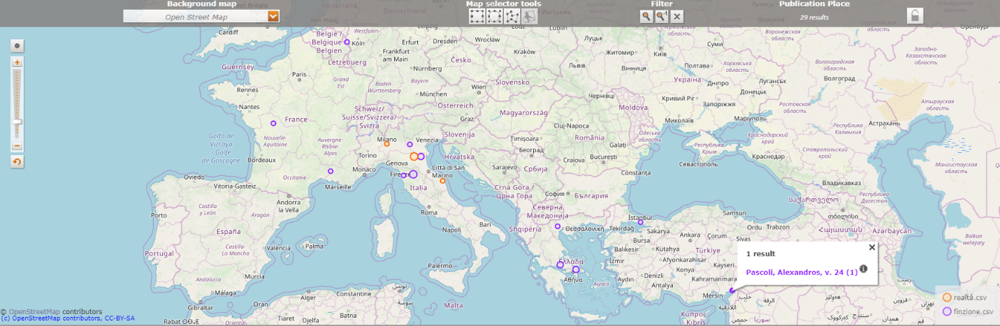
Figura 10: Implementazione del Geo-Browser.
Alcune osservazioni: come si vede, la didascalia sul significato dei colori è presente in basso a destra. Il viola domina la scena, perché mentre a ogni opera sono associati al massimo un luogo e una data, al loro interno gli autori possono aver parlato di molti luoghi e molti eventi.
Cliccando su un punto della mappa appare un popup che riporta il contenuto del campo “Address”. Nel caso mostrato, ad esempio, cliccando su Isso in Turchia si legge “Pascoli, Alexandros, v. 24”, che è appunto il luogo all’interno del testo del passo citato. Cliccando sulla i in apice, invece, appare quanto trascritto nella cella della “Description”: in questo caso “A Isso Alessandro sconfisse i Persiani guidati dal re Dario, nella battaglia del 333 a.C.”.
Se si vuole leggere il verso in cui compare questo riferimento, sempre selezionando il punto sulla mappa, viene spuntato anche il corrispondente nella tabella sottostante. 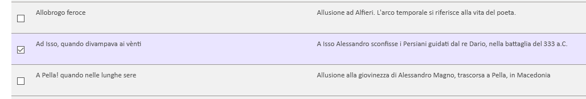
Figura 11: Tabella sotto la mappa.
Anche sui dati sono possibili manipolazioni interessanti. Ogni colonna della tabella è riordinabile in ordine alfabetico crescente o decrescente. Selezionando una riga, l’elemento viene evidenziato anche sulla linea del tempo e sulla mappa, mentre il pulsante permette di selezionare l’opposto della selezione corrente. Una volta isolato il proprio ambito di ispezione, è possibile eliminare tutti gli altri campi con la stessa lente d’ingrandimento vista per la mappa.
Osservando i grafici nella loro interezza, è più facile anche a colpo d’occhio giungere a considerazioni stimolanti. In questo risiede la loro utilità, nell’espressività visiva. Pur su una banca dati abbastanza limitata come è la nostra, ad esempio, stupisce un punto della mappa lontano dall’Italia di raggio insolitamente ampio: Gerusalemme. Evidenziandolo, si scopre che vi fanno capo quattro risultati, due da Dante e due da Tasso. Dante ne parla a proposito della morte di Cristo e perché sotto Gerusalemme si apre la porta del suo Inferno, mentre per Tasso è il luogo liberato da Goffredo di Buglione: “Canto l'arme pietose e 'l capitano”. L’arco temporale abbracciato da questi eventi è amplissimo, dal 34 d.C. al 1090 e poi al 1300. Due caposaldi della Letteratura Italiana così profondamente radicati nel cuore del Medio Oriente. Eppure, entrambi non ne danno una visione positiva: per l’uno è il luogo della morte del figlio di Dio e l’accesso per il regno di Lucifero, per l’altro un luogo da liberare da quelli che considera infedeli. In un Italia profondamente multiculturale qual è quella odierna (circa 200 nazionalità, dati Istat) e in cui la seconda religione è l’Islam viene da chiedersi come insegnare Dante e Tasso nelle scuole e come riattualizzarli. Una domanda che si poneva già Alberto Asor Rosa nell’articolo Proibire Dante e Tasso? apparso su Repubblica il 14.03.2006.
Voyant Tools
Insieme alla mappa e alla linea del tempo, il terzo e ultimo servizio previsto per la collezione è uno strumento di analisi testuale: Voyant Tools.
Nasce dalla collaborazione tra due università canadesi, allo scopo di facilitare l’interpretazione dei testi da parte di studenti in Digital Humanities. Ci riesce coniugando metodi propri della filologia tradizionale - come le frequenze, le concordanze e le tendenze – con i vantaggi offerti dalla computazione, in grado di restituire in frazioni di secondo risultati a volte illuminanti. Si ricorda in questo senso che fin dalle origini l’Informatica Umanistica ha cercato di ottenere tale risultato, a partire dall’Index Thomisticus realizzato da Roberto Busa nel 1949.
Il progetto è open source e il codice liberamente accessibile attraverso GitHub. Per il nostro scopo si farà però uso della corrispondente applicazione web, strutturata in modo da essere perfettamente integrabile in qualsiasi documento o sito terzo. Si vuole perciò ripercorrerne l’implementazione, a cominciare da come è stato creato il corpus e proseguendo con i singoli strumenti prescelti, per poi concludere con una visione d’insieme e su come tutti questi strumenti interagiscono tra loro.
Voyant è uno servizio di computazione digitale, quindi i suoi risultati sono tanto più interessanti quanto più numerosi sono i dati elaborati. Si è scelto pertanto di non isolare i testi e analizzarli singolarmente, ma di creare un unico corpus che li contenga tutti, lasciando comunque aperta la possibilità di selezionarne determinati aspetti. In questo modo si spera di evidenziare correlazioni altrimenti invisibili al solo occhio umano, per quanto attento e meticoloso.
In effetti il servizio offre quattro possibilità di input: un URL, un testo da incollare in un’apposita text area e infine l’upload di uno o più file. I formati consentiti per quest’ultima possibilità sono l’HTML, l’XML, il PDF, l’RTF e MS Word. Si ricorda che i testi della nostra collezione sono stati tutti marcati in XML/TEI, dopodiché, come si è visto nel capitolo sulla struttura e il layout, sono stati trasformati in HTML attraverso un processore XSLT. Quest’ultimo passaggio si rivela fondamentale anche per implementare Voyant e in particolare per il Reader in esso contenuto, come si vedrà in seguito. L’XML contiene infatti solo dati grezzi e in questo sta la sua potenza e flessibilità. Non contiene, per definizione, informazioni sul layout e quindi, per esempio, sull’andata a capo dei versi. Caricando i testi in XML le linee apparirebbero una di seguito all’altra e pertanto il formato ideale è l’HTML.
Rimane un ultimo problema da risolvere: il documento così caricato contiene una sezione poco interessante per l’analisi testuale. Ci si riferisce ai menu a tendina che permettono di evidenziare i campi semantici marcati. Voyant risponde a questa esigenza mettendo a disposizione delle opzioni, diverse per ciascun formato, che consentono di specificare le aree di interesse. Per l’HTML questo avviene attraverso i selettori CSS. Nel nostro caso, il testo è contenuto in un <div id= “testo”> mentre il titolo nell’unico titolo di primo livello della pagina. Di conseguenza si è passato come contenuto #testo e come titolo h1.
Una volta caricato il corpus, il primo strumento messo a disposizione dalla piattaforma è il Cirrus. Il nome allude a una nube dall’aspetto filamentoso e si tratta appunto di una word cloud, che mostra visivamente i termini che appaiono con più frequenza, sia nell’intera collezione che nei singoli documenti. Per riuscirci utilizza due parametri: la dimensione della parola e la sua distanza dal centro. Più un vocabolo è grande, più è centrale, maggiore è la sua frequenza. Terminato lo spazio a disposizione vengono utilizzati anche gli interstizi tra le altre parole, mantenendo la stessa regola. La disposizione destra/sinistra o i colori sono invece irrilevanti, tanto che ricaricando la pagina il risultato in questo senso è sempre diverso. Passando il mouse su una parola, infine, appare in sovraimpressione il numero delle sue occorrenze.
Osservando il risultato di default elaborato dal programma, si notano subito molte parole centrali della collezione, così come altre poco significative.
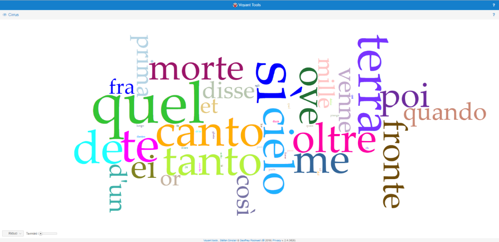
Figura 12: La tag cloud iniziale
Per fare qualche esempio di aree semantiche chiave, due tra i termini in evidenzia si riferiscono alla natura: “terra”, che occorre 7 volte, e “cielo”, che compare 6. “Terra” è inoltre la parola-chiave preponderante nella collezione in generale. A colpo d’occhio è così possibile intuire quale sia stato il filo conduttore che ha guidato la scelta dei componimenti. Non a caso, una delle piste seguite è stata appunto quella del rapporto tra il poeta e la natura. Se si declina lo stesso ragionamento su una silloge poetica, come gli Ossi di Seppia di Montale, non è difficile capirne l’utilità. Franco Moretti parla a questo proposito di distant reading (Moretti, 2005), una modalità di lettura che privilegia la forma a discapito del dettaglio, che permette di allargare il canone e trovare relazioni altrimenti invisibili.
L’efficacia delle nuvole di parole è stata anche, però, aspramente criticata. Ad esempio, nell’articolo Word clouds considered harmful (Harris, 2011), si afferma che:
“I created a word cloud of Tea Party feelings about Obama, and the two largest words were implausibly ‘like’ and ‘policy’, mainly because the importuned word ‘don’t’ was automatically excluded”.
In questo caso, un giornalista del “New York Times”, realizzando una tag cloud a proposito di un movimento fortemente contrario alle politiche economiche di Obama, ha notato che esso risultava invece lessicalmente favorevole per via della stoplist, che ha escluso la parola vuota “non”. In sostanza, la nuvola di parole da sola può essere fuorviante. Per questo nel nostro progetto è stata inserita in un contesto di strumenti che la controbilanciano ed offrono esplorazioni più dettagliate e sfumate.
Rimane comunque il problema di cosa considerare semanticamente vuoto e cosa non lo è. Il Cirrus parte già con delle stopwords predefinite, che comprendono gli articoli deteminativi e indeterminativi, le preposizioni semplici e articolate, i verbi avere, essere e fare, i pronomi personali, possessivi, relativi e dimostrativi, le congiunzioni e i cinque avverbi “chi”, “come”, “dove”, “quando” e “perché”, oltre al già citato “non”.
Per quanto completa, la lista non contiene però molte variazioni grafiche tipiche dell’italiano medievale e molto presenti nella collezione: c’è “e” ma non c’è “et”, ci sono “di” e “un” ma non c’è “d’un, c’è “egli” ma manca “ei”. Occorre quindi aggiungere manualmente tali vocaboli alla lista, sempre nel rispetto dei criteri sopra enunciati. Di seguito si riporta il risultato finale.
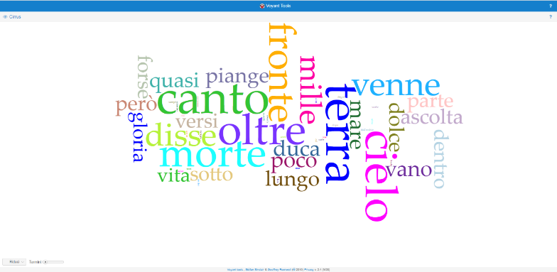
Figura 13: La tag cloud finale.
Come si vede, eliminate le parole poco pregnanti, altre emergono con più forza: i “versi”, ad esempio, che collegano i proemi dell’Orlando Furioso e della Gerusalemme Liberata, contenenti entrambi la protasi e quindi un discorso sul discorso stesso, necessariamente metapoetico, dunque.
“L'alto valore e' chiari gesti suoi
vi farò udir, se voi mi date orecchio,
e vostri alti pensier cedino un poco,
sì che tra lor miei versi abbiano loco.”
(Ariosto, Orlando Furioso, Proemio, vv. 29-32)
“Sai che là corre il mondo ove più versi
di sue dolcezze il lusinghier Parnaso,
e che 'l vero, condito in molli versi,
i più schivi allettando ha persuaso.”
(Tasso, Gerusalemme Liberata, Proemio, vv. 17-20)
Il prossimo strumento ha lo scopo di compensare il principale limite del Cirrus: il rischio di ingannare lo studioso omettendo parole che ribaltano il significato di quelle preponderanti o ne danno diverse sfumature. Per risolvere tale inconveniente occorre includere nuovamente i termini prima esclusi e osservare il loro rapporto con quelli ad alta frequenza. Assolve molto bene a questo scopo il Collocates Graph, il grafico delle collocazioni. Seguendo la definizione dello Zingarelli 2017, in lessicografia si dice collocazione una “combinazione di due o più parole che, sebbene rimangano autonome tra loro dal punto di vista del senso e siano sostituibili, formano insieme un’espressione resa tipica dall’uso”. Nel nostro caso, l’uso è lo stile di un autore.
All’interno di questo servizio, i collegamenti appaiono in un reticolo di rettangoli, linee e colori, dove l’azzurro rappresenta una parola-chiave, mentre l’arancione una collocazione. Chiaro è che una collocazione, nel momento in cui diventa termine centrale di un nuovo nesso logico, si trasforma anch’essa in una parola-chiave e viene colorata in azzurro. Passando il mouse su un nodo, nel caso di una keyword viene mostrata la sua frequenza assoluta, nel caso di una collocazione il numero di occorrenze affianco alla keyword. Infine, un apposito slider consente di scegliere quante parole a destra e a sinistra del termine-chiave bisogna considerare per avere una collocazione. Se si lascia l’opzione predefinita di cinque il risultato è il seguente:
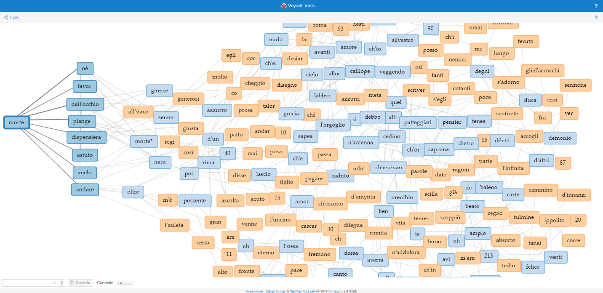
Figura 14: Il Collocates Graph.
A una prima occhiata può sembrare un groviglio inestricabile, e in una visualizzazione statica effettivamente lo è, ma l’applicativo vero e proprio evidenza i nessi selezionati e permette di trascinare i nodi per isolarli o disporli secondo necessità, risultando infine estremamente usabile. È quanto si è fatto per “morte” e le sue collocazioni, come si può osservare nella parte sinistra del grafico. Nella collezione, “morte” occorre cinque volte, come si scopre al passaggio del mouse, due delle quali a distanza di otto versi nell’Alexandros di Giovanni Pascoli. Utilizzando una wordcloud e senza leggere il testo, si può giungere alla provvisoria conclusione che l’Alessandro Magno di Pascoli in questo testo si confronta con la morte. È un inizio, ma non è abbastanza, perché tale confronto può avvenire in molteplici modi: può essere di sfida, di rassegnazione o persino di desiderio e la sua accezione cambierebbe totalmente. Per chiarire l’ambiguità viene appunto in aiuto il grafico, che evidenzia otto collocazioni, quattro delle quali contenute nel componimento pascoliano. Per avere così tante co-occorrenze in così pochi versi, anche senza leggerli, se ne può intuire un andamento cantilenante, ripetitivo. Così è infatti:
E così, piange, poi che giunse anelo:
piange dall'occhio nero come morte;
piange dall'occhio azzurro come cielo.
Ché si fa sempre (tale è la sua sorte)
nell'occhio nero lo sperar, più vano;
nell'occhio azzurro il desiar, più forte.
(Pascoli, Poemi conviviali, Alexandros, vv. 411-46)
È una ripetizione data dallo sconforto, lo sconforto di scoprire che oltre l’Asia non c’è nulla, solo l’“Oceano senz’onda”. Il sogno è finito, tutto è stato compiuto e allora tanto meglio “quanto più cimenti, / quanto più dubbi, quanto più destino!”. Questo è il senso della prima parte del componimento:
[…] Un nomo di tra le are
intonava Timotheo, l'auleta:
soffio possente d'un fatale andare,
oltre la morte; e m'è nel cuor, presente
come in conchiglia murmure di mare.
(vv. 32-36)
Siamo quindi di fronte a due usi completamente diversi della parola “morte”. Inizialmente è in collocazione con “andare oltre”, in un atteggiamento di sfida per raggiungere l’infinito e l’eternità. Dopo, però, quando rimane solo “il Fine, l'Oceano, il Niente”, la speranza si fa vana e la morte desiderabile. Si trova quindi a fine verso insieme ad “anelo”, con un gioco di significati a distanza molto frequente nel Pascoli, come a voler dire “anelo la morte”. È proprio quest’ultimo nesso che dalla lettura del grafico appare evidente, mentre è ben nascosto nel nudo testo e riservato ai soli lettori più attenti.
Voyant mette infine a disposizione degli strumenti per esplorare i testi e trovare rapidamente le informazioni individuate attraverso gli altri grafici. La funzionalità principale a questo proposito è il Reader, che come dice la parola stessa permette di leggere il contenuto del corpus. È appunto per realizzare questo componente che si è reso necessario includere i testi in formato HTML, perché venisse rispettata la scansione dei versi.
Il Reader non si limita a questo, però, integrando nella parte sottostante un grafico di tendenza. Selezionando una parola, mostra infatti dove e quanto compare. Una linea blu verticale indica poi il punto attuale del testo e si può trascinare ovunque lungo la barra. Infine, la lunghezza di ogni testo è rappresentata grazie a un istogramma: più lungo e più alto è il rettangolo, più corposo è il testo. Anche in questo caso, i colori servono solo a distinguere gli istogrammi e non sono semanticamente rilevanti.
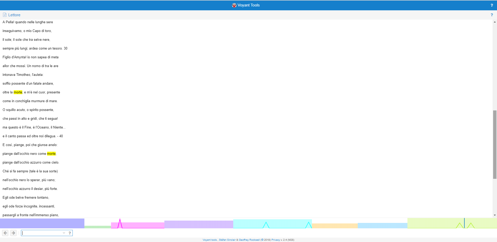
Figura 15: Il Reader.
È interessante notare che questo strumento interagisce sia con la nuvola di parole che con il grafico delle collocazioni. Selezionando un termine in uno dei primi due, infatti, esso viene evidenziato dal lettore e inserito nell’istogramma.
Insieme al Reader, l’esplorazione è facilitata da Documents, una lista ordinata dei documenti contenuti nella collezione. Oltre al titolo, riporta il numero di parole, il numero di forme (e.g. “cielo” viene contato una volta sola) e il rapporto tra i primi due (forme / parole) espresso in percentuale: maggiore è questa percentuale, maggiore è la varietà del vocabolario. Si segnala però che il risultato è sensibilmente influenzato dalla lunghezza del testo e che quindi restituisce valori poco significativi, perché i testi della collezione sono tutti di estensioni differenti. Sarebbe più utile se facesse il calcolo su uno stesso numero di parole, ad esempio cento.
Viene poi mostrato il rapporto tra numero di parole e numero di frasi. Il modo in cui vengono calcolate le frasi deve essere considerato molto approssimativo, soprattutto a causa delle complicazioni con le abbreviazioni e altri usi della punteggiatura (l'analisi delle frasi viene eseguita dalla classe BreakIterator di Java e dipende anche dal rilevamento accurato del linguaggio).
In sostanza, questo applicativo va usato solo come riepilogo dei testi presenti nel corpus e non per l’analisi vera e propria.
Infine, si è deciso di includere Contexts, che altro non è se non una lista di concordanze, cioè di parole inserite nel loro contesto. Anche in questo caso la potenza dello strumento sta nel popolarsi dinamicamente in base ai termini selezionati negli altri grafici, così da aggiungere chiarezza ai singoli ed evitare l’effetto “Tea Party favorevole ad Obama”.
Nell’immagine conclusiva si vogliono mostrare tutti gli strumenti di cui si è parlato in un’unica vista organica, così come apparirebbero nella collezione vera e propria.
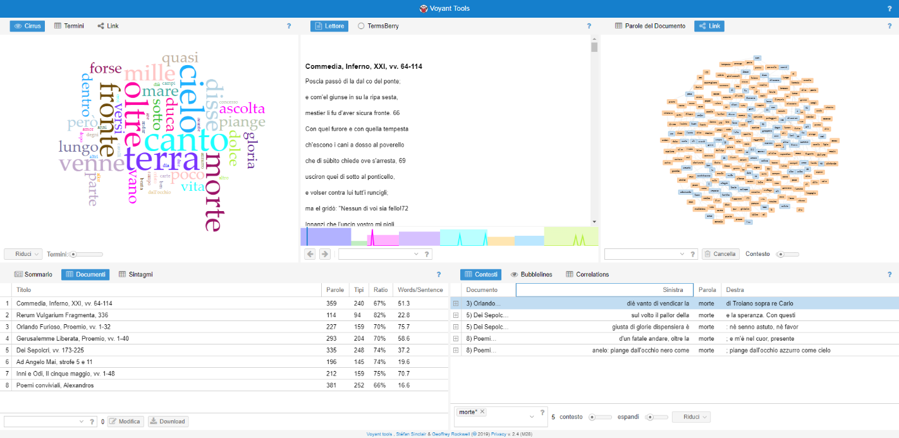
Figura 16: Sguardo organico su Voyant.
conclusioni
Come conclusione al presente lavoro di tesi, ci si vuole riallacciare all’introduzione e al primo capitolo teorico, in cui si gettavano le basi per tutto lo studio successivo.
Gli obiettivi erano tre: formalizzare, rappresentare e offrire servizi. Il primo è stato raggiunto adottando XML/TEI, uno standard di marcatura che consente di descrivere qualunque fenomeno testuale. Il secondo è stato invece centrato grazie a XSL, un foglio di stile basato su XML e dunque con esso totalmente compatibile. Infine, sono state implementate due potenti piattaforme di servizi: il Geo-Browser di DARIAH-DE per la mappa e linea del tempo e Voyant Tools per l’analisi testuale. La priorità era studiare i luoghi e i tempi sia della finzione poetica che della realtà compositiva in stretta correlazione: ci si è riusciti realizzando una tabella in CSV, che conteneva indicazioni sia temporali che spaziali, sia sulle opere che sui singoli luoghi testuali. Il Geo-Browser era poi in grado di elaborarle, evidenziando inedite connessioni.
Per quanto riguarda l’analisi testuale, il focus era sugli aspetti lessicali, che sono stati messi in risalto grazie a una nuvola di parole e un grafico delle collocazioni.
Nel capitolo primo si era data una definizione di edizione digitale accademica, con lo scopo di seguire le best practice efficacemente riassunte dall’MLA Statement on the Scholarly Edition in the Digital Age. Riassumendole, consistevano del rendere conto delle fonti sia primarie che secondarie e nel giustificare i metodi editoriali prescelti. Si è visto come TEI assolva perfettamente a entrambi gli scopi, anche senza bisogno di una documentazione a parte. In particolare, questo avviene in più punti del <teiHeader>: nella source description si dà una descrizione esaustiva della fonte, riportandone titolo, autore, editore, luogo e data di pubblicazione; mentre nell’editorial declaration è possibile elencare i punti di interesse che hanno guidato la marcature, così come nella project description si espone il vero e proprio scopo del lavoro; infine, attraverso la tags declaration e la reference description si chiarisce con quale sfumatura sono stati usati i singoli tag.
Inoltre, grande attenzione è stata posta a garantire un bilanciamento tra il libero accesso dell’edizione e il rispetto delle proprietà intellettuali. Sono stati infatti esclusi tutti quei testi i cui autori siano morti da meno di settant’anni e quindi ancora coperti da diritto d’autore.
Si ricapitolano adesso i vantaggi che tale collezione offre agli utenti. Innanzitutto, due sono i possibili fruitori contemplati: lo studioso di Informatica Umanistica e quello di Letteratura in generale. Al primo si assicura la possibilità di utilizzare i dati grezzi in XML/TEI per distribuzioni alternative, data la natura flessibile, strutturale e contenutistica dello standard, indipendente dalla sua rappresentazione. Si garantisce poi la facilità di accrescimento della collezione, data la presenza di uno schema predefinito e di un foglio di stile preimpostato per adattarsi a qualunque testo marcato secondo quello schema.
Per quanto concerne la seconda tipologia di utente, a lui è data l’opportunità di accedere facilmente e liberamente ai testi della collezione, tutti provenienti da edizioni critiche di acclarata affidabilità; la possibilità di studiare a colpo d’occhio il campo semantico dei componimenti e i personaggi in gioco, individuandoli rapidamente nel testo; infine, attraverso i servizi di cui si è detto, lo studioso di Letteratura potrà esplorare connessioni temporali, spaziali e lessicali di indubbia originalità.
Il progetto si è concentrato su alcuni punti ben precisi ed è stato attento a non strabordarne per esprimersi specificamente su pochi e non genericamente su molti. Questo non significa, però, che gli strumenti adottati siano gli unici possibili. Anzi, sono molte le vie di miglioramento e se ne vogliono qui suggerire alcune:
- Arricchimento del quadro informativo e spunti per ulteriori ricerche attraverso Wikipedia e, in particolare, attraverso la sua API DBpedia.
- Molti testi acquisiscono più significato se confrontati ad altri affini, quindi offrire l’opportunità di visualizzarne due o più affiancati, con limitazioni a seconda del tipo di dispositivo in uso.
- Possibilità per l’utente di fare annotazioni sui testi e di ritrovarle successivamente attraverso un login. Inoltre, si può scegliere se mantenere privato il proprio commento o se condividerlo con la comunità. Di conseguenza, ciascuno può visualizzare tutti i commenti fatti su un certo testo e accrescere ancora di più i propri spunti di riflessione.
- Progettare l’applicazione in modo da adeguarsi agli ultimi standard della W3C Web Accessibility Initiative (WAI), in particolare ARIA, in modo da garantirne l’usabilità anche a un pubblico con disabilità visiva.
Si vuole concludere con una citazione tratta da Through the Looking-Glass, and What Alice Found There di Lewis Carroll, che nel 1871, ben prima dell’avvento di HTML e XML, aveva già perfettamente riassunto sia il senso che la necessità del markup, nel momento in cui ci si confronta con un testo letterario che, per sua stessa natura, è aperto a infiniti significati.
«When I use a word, Humpty Dumpty said in rather a
scornful tone, it means just what I choose it to mean— neither more nor less. »
Bibliografia
Sulle Digital Humanities:
- Francesca Tomasi (2012), Metodologie informatiche e discipline umanistiche, Carrocci editore, Roma.
- UCLA center for Digital Humanities (2013), Introduction to Digital Humanities, pubblicazione web <http://dh101.humanities.ucla.edu/>.
- MLA Committee on Scholarly Editions (2016), MLA Statement on the Scholarly Edition in the Digital Age, pubblicazione web <https://www.mla.org/content/download/52050/ 1810116/rptCSE16.pdf>.
- Ada Russo (2016), Teorie e pratiche nell’uso di XML/TEI per la codifica dei testi, ILIESI, pubblicazione web <https://docplayer.it/8687876-Argomenti-codifica-e-linguaggi-di-markup-xml-tei-strumenti-e-procedure-per-la-codifica-e-la-pubblicazione-iliesi.html>.
- Franco Moretti, La letteratura vista da lontano (2005), Einaudi, Roma.
Fonti letterarie:
- Alberto Asor Rosa (14-03-2006), Proibire Dante e Tasso?, la Repubblica <http://rassegnastampa.unipi.it/rassegna/ archivio/2006/03/14SIF2015.PDF> .
- Istat (2016), Bilancio demografico nazionale < https://www.istat.it/it/files/2017/06/ bilanciodemografico-2016_13giugno2017.pdf?title=Bilancio+demografico+nazionale+-+13%2Fgiu%2F2017+-+Testo+integrale.pdf>.
- Dante Alighieri, Commedia, Inferno, XXI, versi 64‑114 in La Commedia secondo l'antica vulgata (1994), a cura di Giorgio Petrocchi, Le Lettere, Firenze.
- Francesco Petrarca, Canzoniere (1992), 336, a cura di Gianfranco Contini, Einaudi, Torino.
- Ludovico Ariosto, Orlando Furioso (1996), Proemio, versi 1-32, a cura di Lanfranco Caretti, Einaudi, Torino.
- Torquato Tasso, Gerusalemme liberata (1192), Proemio, versi 1-40, a cura di Lanfranco Caretti, Mondadori, Milano.
- Ugo Foscolo, Dei Sepolcri, versi 173-225 in Le opere (1985), a cura di Francesco Pagliai, Le Monnier, Firenze.
- Alessandro Manzoni, Inni e Odi, Il cinque maggio, versi 1-48 in Poesie (1976), a cura di Riccardo Bacchelli, Einaudi, Torino.
- Giacomo Leopardi, Canti, Ad Angelo Mai, strofe 5 e 11 in Tutte le opere (1998), a cura di Lucio Felici, Lexis Progetti Editoriali, Roma.
- Giovanni Pascoli, Poemi conviviali, Alexandros in Poesie (1997), a cura di Augusto Vicinelli, Mondadori, Milano.
- Lewis Carroll, Through the looking-glass, and what Alice found there, edizione digitale, pagina 81 <http://birrell.org/andrew/alice/lGlass.pdf>.
Sulle linee guida della TEI:
- Sito ufficiale della TEI <https://tei-c.org/>.
- Tutoriale TEI by examples <http://teibyexample.org/>.
- Roma, web app < https://roma2.tei-c.org/>.
- Sui tag registrati presso IANA <http://www.iana.org/assignments/language-subtag-registry/language-subtag-registry>.
Sul benchmark e le risorse analizzate:
- Biblioteca italiana, sito ufficiale < http://www.bibliotecaitaliana.it>.
- Sezione progetti sul sito ufficiale della TEI <https://tei-c.org/activities/projects/>.
- Bibliotheca legum. A Database on Carolingian Secular Law Texts, sito ufficiale <http://www.leges.uni-koeln.de/en/>.
- Cambridge Digital Library, sito ufficiale < https://cudl.lib.cam.ac.uk/ >.
- Capitularia. Edition of the Frankish Capitularies, sito ufficiale < https://capitularia.uni-koeln.de/en/>.
- FIHRIST: Union catalogue for Islamic and other Middle Eastern Manuscripts, sito ufficiale < https://www.fihrist.org.uk/ >.
- Darwin Correspondence Project, sito ufficiale <https://www.darwinproject.ac.uk/>.
- Théâtre classique (1550-1890), sito ufficiale < http://www.theatre-classique.fr>.
Sugli strumenti:
- Digital Research Tools (DIRT), sito ufficiale <https://dirtdirectory.org/> (molti link sono al momento inattivi, lo si è perciò consultato attraverso Internet Archive <https://archive.org/web/>.
- Way back machine, sito ufficiale < https://web.archive.org/>.
- Data-Driven Documents (D3.js), sito ufficiale z <https://d3js.org/>.
- Voyant tools, sito ufficiale <https://voyant-tools.org/>.
- Voyant tools, documentazione < https://voyant-tools.org/docs/#!/guide>.
- Geocommons, sito ufficiale <http://geocommons.com/>.
- DARIAH-DE Geo-Browser, documentazione <https://geobrowser.de.dariah.eu/doc/geobrowser.html>.
- Su KML <https://en.wikipedia.org/wiki/ Keyhole_Markup_Language> e <https://developers.google.com/kml/>.
- Su CSV <https://en.wikipedia.org/wiki/Comma-separated_values>.
- Sul formato delle date in XSD <https://www.w3.org/TR/xmlschema11-2/#gYear> e <https://en.wikipedia.org/wiki/XML_Schema_(W3C)>.
- Jacob Harris, Word clouds considered harmful (13/10/2011), NiemanLab, pubblicazione web <https://www.niemanlab.org/2011/10/word-clouds-considered-harmful/>.
- Def. 5 di “collocazione”, Zingarelli (2017), Bologna.